![]()
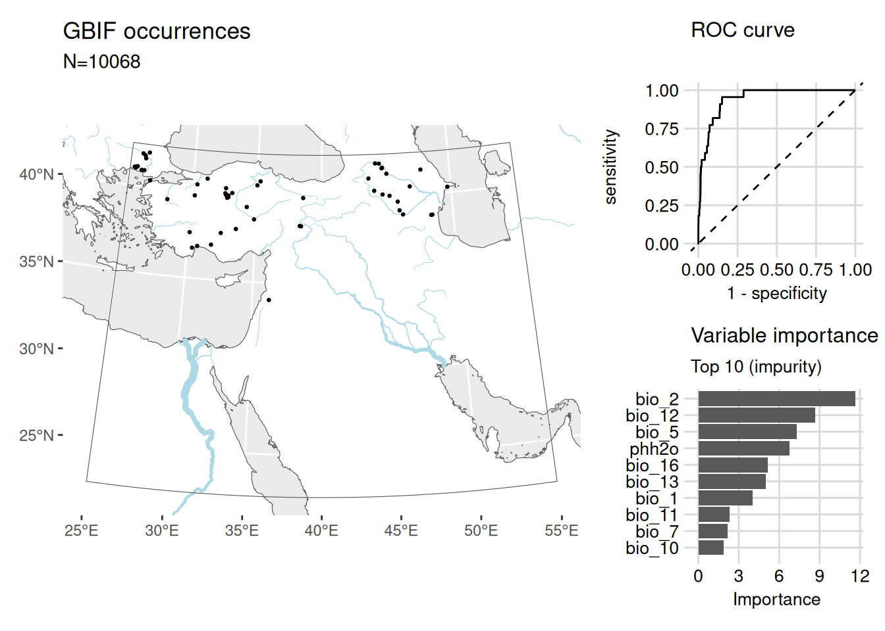
Biogeography of crop progenitors and wild plant resources in the terminal Pleistocene and Early Holocene of West Asia, 14.7–8.3 ka
Fitted model summaries and predicted palaeodistributions
Abstract
This appendix describes ecological niche models of 81 plant species relevant to the subsistence of Late Epipalaeolithic (15–11.7 ka) and Neolithic (11.7–8.2 ka) societies in West Asia. It includes summaries of the training data and performance metrics of the fitted models together with predicted palaeodistributions of each species for three simulated climatologies over the Pleistocene/Holocene boundary (the Bølling–Allerød, 14.7–12.9 ka; Younger Dryas, 12.9–11.7 ka; and Early Holocene, 11.7–8.3 ka) as well as current conditions. For a full description of the methodology, references, and discussion of the results, please see the main text. The data and R code used to produce the models, as well as the full predicted palaeodistributions in raster format, are achived with Zenodo at https://doi.org/10.5281/zenodo.14629984.
Adonis dentata
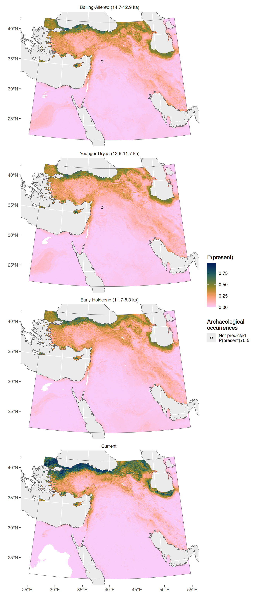
| Site | Age range | N assemblages | Average prop. | Source | Predicted? |
|---|---|---|---|---|---|
| Early Holocene (11.7-8.3 ka) | |||||
| Netiv Hagdud | 11.6–10.6 ka | 1 | 0.06% | ORIGINS | no |
| Kastros | 10.8–9.9 ka | 1 | 0.46% | ORIGINS | no |
Aegilops crassa
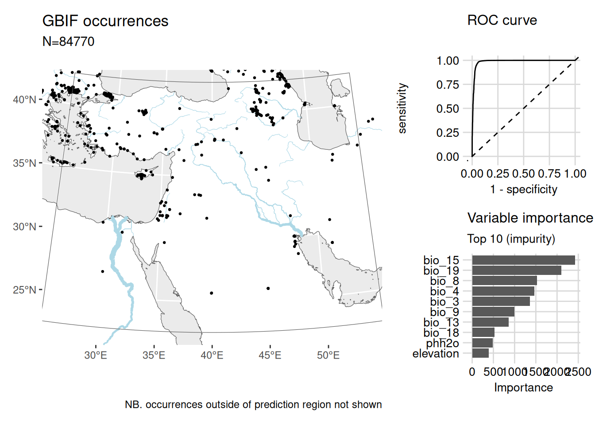
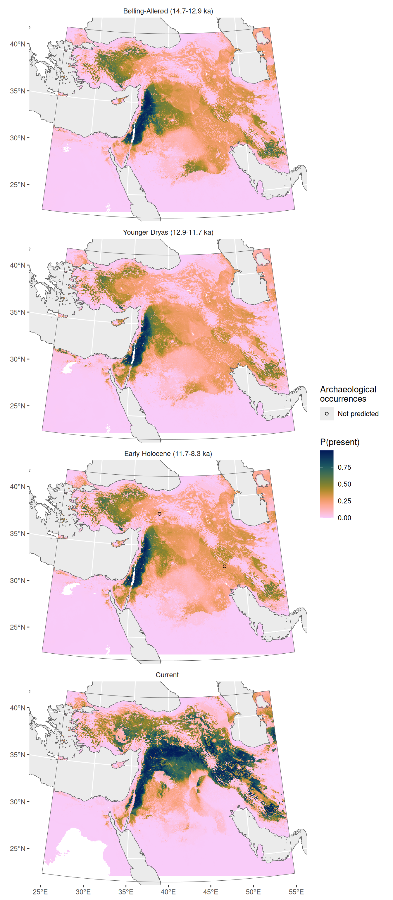
| Site | Age range | N assemblages | Average prop. | Source | Predicted? |
|---|---|---|---|---|---|
| Early Holocene (11.7-8.3 ka) | |||||
| Cafer Höyük | 10.6–9.7 ka | 1 | 0.08% | ORIGINS | no |
| Ali Kosh | 10.1–8.0 ka | 3 | 1.60% | ORIGINS | no |
Aegilops speltoides
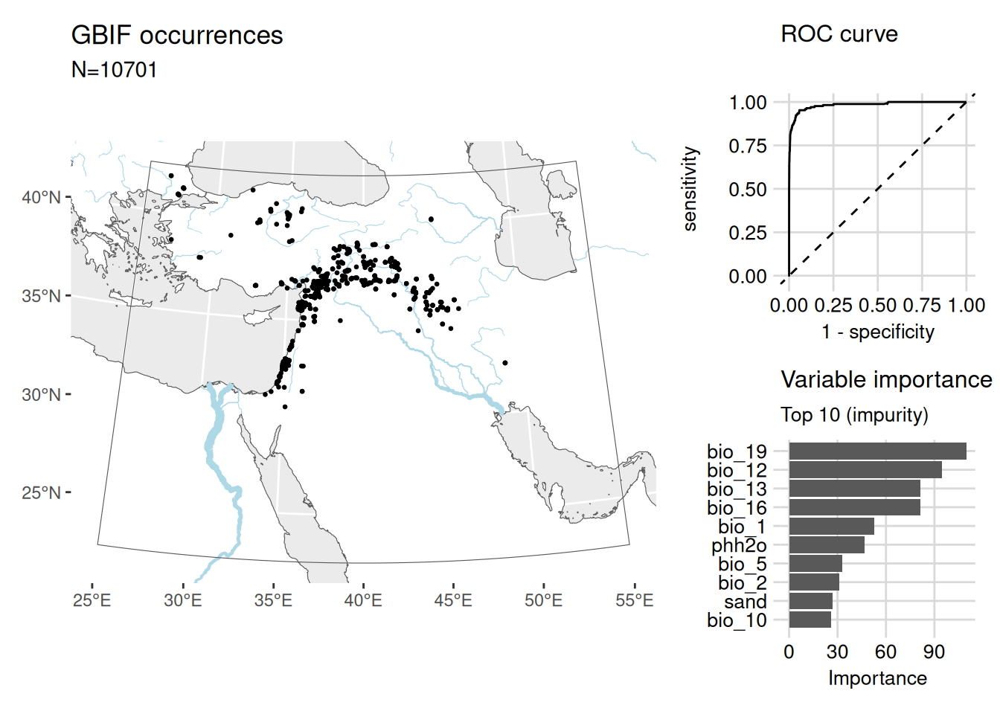
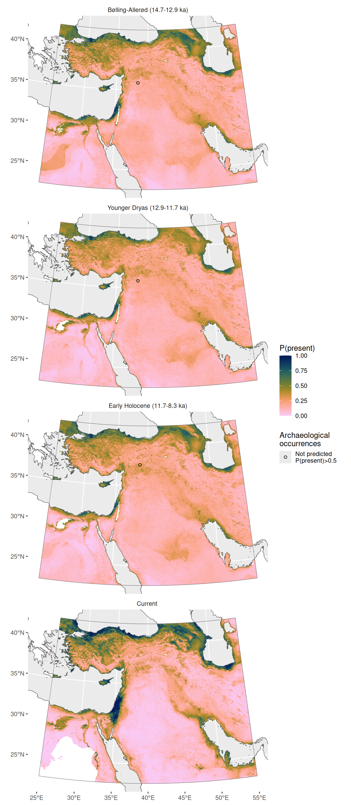
Aegilops tauschii
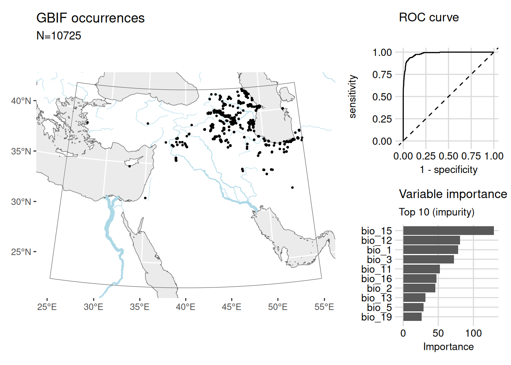
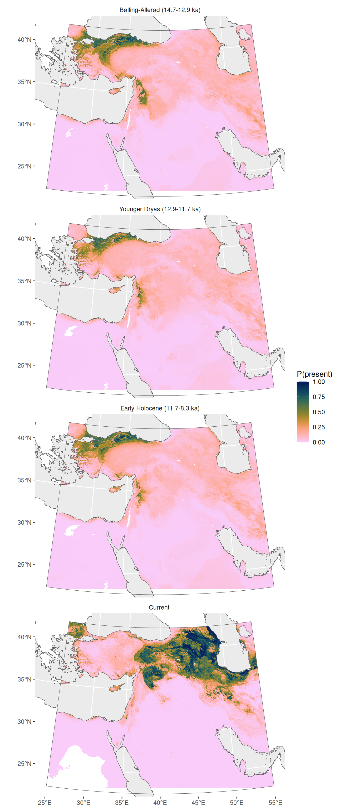
Aizoanthemopsis hispanica
Including Aizoon hispanicum.
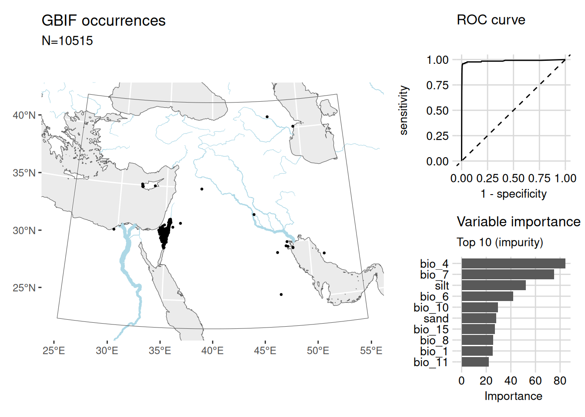
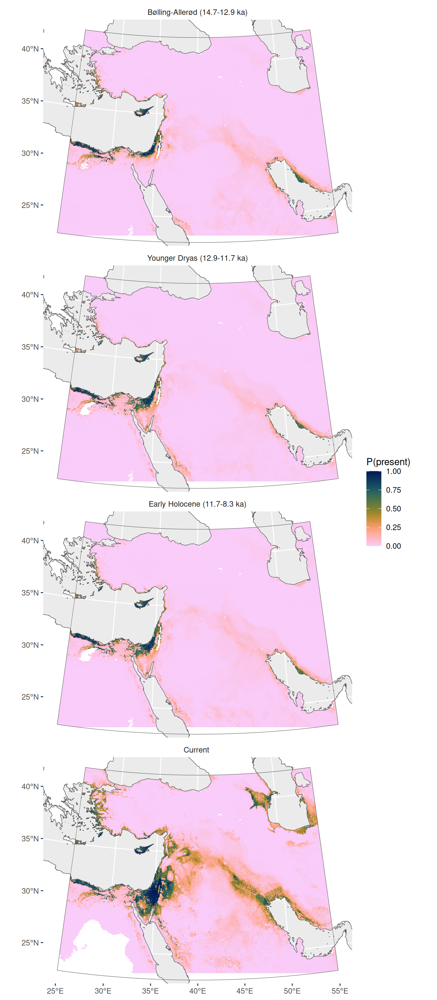
| Site | Age range | N assemblages | Average prop. | Source | Predicted? |
|---|---|---|---|---|---|
| Younger Dryas (12.9-11.7 ka) | |||||
| Abu Hureyra | 13.0–12.1 ka | 1 | 0.09% | ORIGINS | no |
| Early Holocene (11.7-8.3 ka) | |||||
| Netiv Hagdud | 11.6–10.6 ka | 1 | 5.16% | ORIGINS | no |
| Zahrat adh-Dhra 2 | 11.4–10.4 ka | 1 | 0.31% | ORIGINS | no |
| El-Hemmeh | 11.1–10.5 ka | 1 | 0.11% | ORIGINS | no |
Ammi majus
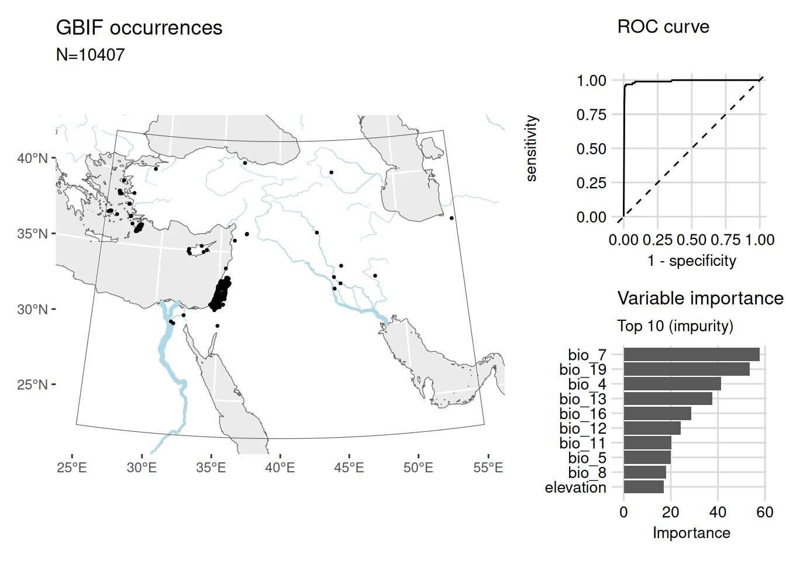
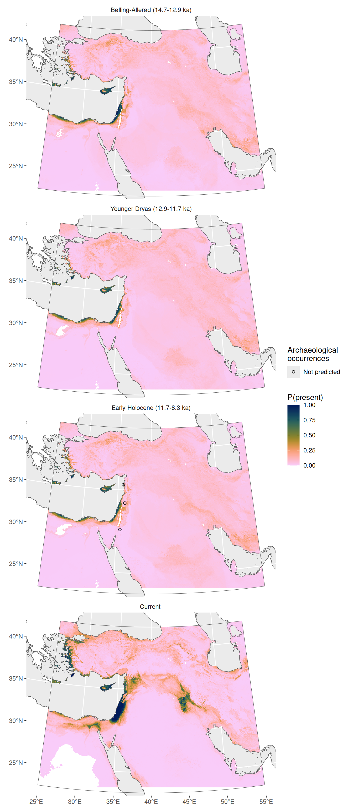
| Site | Age range | N assemblages | Average prop. | Source | Predicted? |
|---|---|---|---|---|---|
| Early Holocene (11.7-8.3 ka) | |||||
| Basta | 9.4–9.2 ka | 1 | 0.20% | ORIGINS | no |
| Tell Ramad | 9.3–8.6 ka | 2 | 0.02% | ORIGINS | no |
| Ras Shamra | 8.8–8.3 ka | 1 | 0.05% | ORIGINS | no |
Androsace maxima
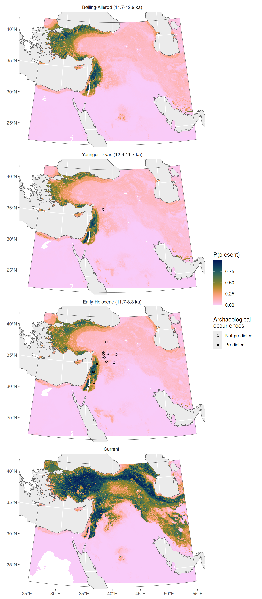
| Site | Age range | N assemblages | Average prop. | Source | Predicted? |
|---|---|---|---|---|---|
| Younger Dryas (12.9-11.7 ka) | |||||
| Mureybet | 12.1–11.9 ka | 1 | 0.10% | ORIGINS | no |
| Early Holocene (11.7-8.3 ka) | |||||
| Mureybet | 11.7–10.8 ka | 2 | 1.05% | ORIGINS | no |
| Jerf el Ahmar | 11.4–10.7 ka | 1 | 0.06% | ORIGINS | no |
| Tell Aswad | 11.2–9.3 ka | 2 | 0.06% | ORIGINS | no |
| El-Hemmeh | 11.1–10.5 ka | 1 | 0.03% | ORIGINS | no |
| Dja'de | 10.7–10.2 ka | 1 | 0.02% | ORIGINS | no |
| Cafer Höyük | 10.6–9.1 ka | 2 | 0.14% | ORIGINS | no |
| Wadi Jilat 7 | 10.2–9.3 ka | 1 | 0.09% | ORIGINS | no |
| Sabi Abyad II | 9.5–8.8 ka | 1 | 0.07% | ORIGINS | no |
| Tell Ramad | 9.3–8.6 ka | 2 | 0.98% | ORIGINS | yes |
| Bouqras | 9.2–8.6 ka | 1 | 0.03% | ORIGINS | no |
| Wadi Jilat 13 | 9.1–8.5 ka | 2 | 0.35% | ORIGINS | no |
Arenaria serpyllifolia
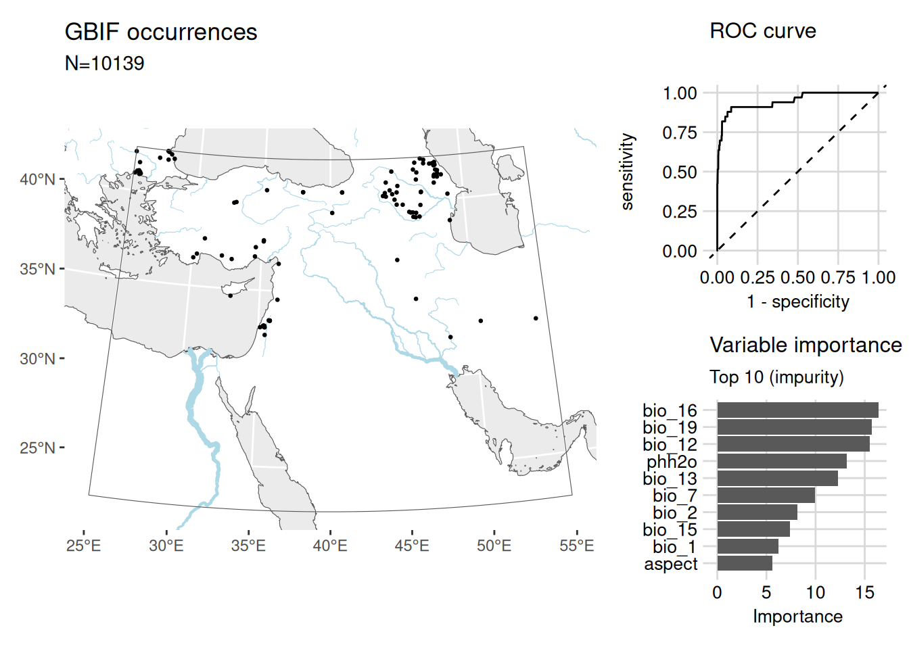
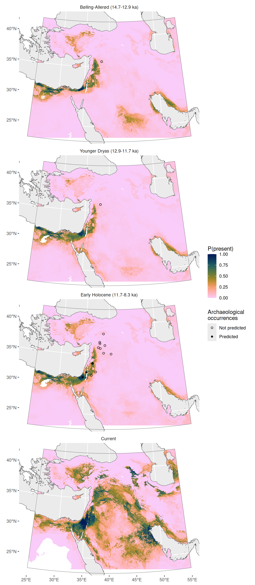
| Site | Age range | N assemblages | Average prop. | Source | Predicted? |
|---|---|---|---|---|---|
| Bølling-Allerød (14.7-12.9 ka) | |||||
| Abu Hureyra | 13.1–13.0 ka | 1 | 0.31% | ORIGINS | no |
| Younger Dryas (12.9-11.7 ka) | |||||
| Abu Hureyra | 13.0–11.8 ka | 2 | 0.15% | ORIGINS | no |
Arnebia decumbens
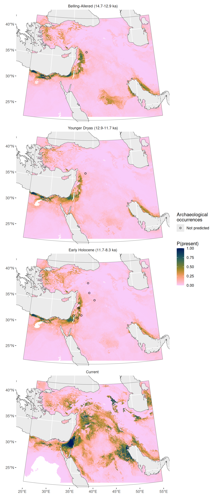
| Site | Age range | N assemblages | Average prop. | Source | Predicted? |
|---|---|---|---|---|---|
| Bølling-Allerød (14.7-12.9 ka) | |||||
| Abu Hureyra | 13.1–13.0 ka | 1 | 3.19% | ORIGINS | no |
| Younger Dryas (12.9-11.7 ka) | |||||
| Abu Hureyra | 13.0–11.8 ka | 2 | 9.55% | ORIGINS | no |
| Mureybet | 12.1–11.9 ka | 1 | 8.00% | ORIGINS | no |
| Early Holocene (11.7-8.3 ka) | |||||
| Mureybet | 11.7–10.8 ka | 2 | 14.43% | ORIGINS | no |
| Netiv Hagdud | 11.6–10.6 ka | 1 | 0.07% | ORIGINS | no |
| El-Hemmeh | 11.1–10.5 ka | 1 | 0.85% | ORIGINS | no |
| Cafer Höyük | 10.6–9.7 ka | 1 | 0.25% | ORIGINS | no |
| Wadi Jilat 7 | 10.2–9.3 ka | 3 | 1.07% | ORIGINS | no |
| Tell Aswad | 10.2–9.3 ka | 1 | 0.04% | ORIGINS | no |
| Sabi Abyad II | 9.5–8.8 ka | 1 | 0.79% | ORIGINS | no |
| Tell Ghoraifé | 9.5–8.6 ka | 1 | 0.10% | ORIGINS | no |
| Dhuweila | 9.4–9.1 ka | 1 | 1.56% | ORIGINS | no |
| Abu Hureyra | 9.3–8.2 ka | 1 | 35.61% | ORIGINS | no |
| Bouqras | 9.2–8.6 ka | 1 | 1.65% | ORIGINS | no |
| Wadi Jilat 13 | 9.1–8.4 ka | 3 | 1.48% | ORIGINS | no |
Arnebia linearifolia
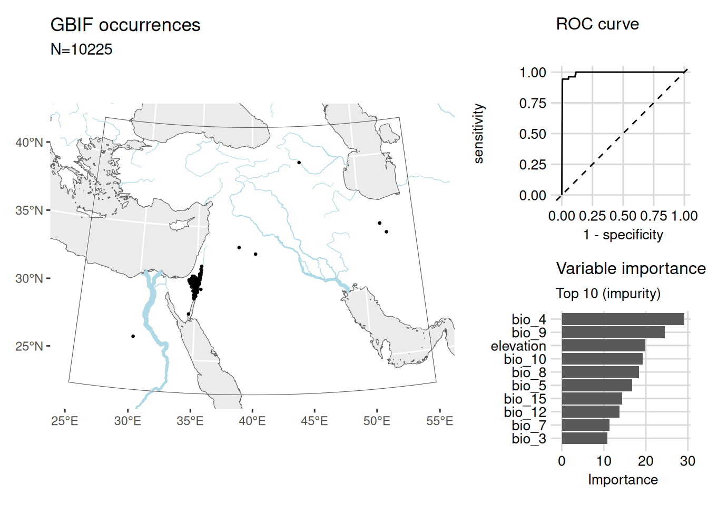
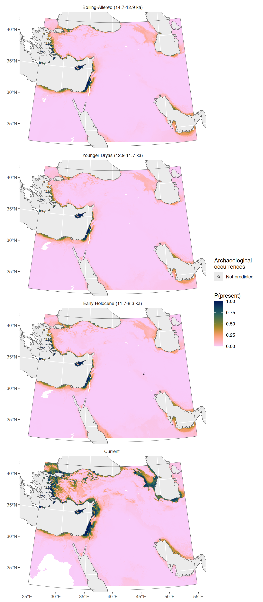
| Site | Age range | N assemblages | Average prop. | Source | Predicted? |
|---|---|---|---|---|---|
| Bølling-Allerød (14.7-12.9 ka) | |||||
| Abu Hureyra | 13.1–13.0 ka | 1 | 0.36% | ORIGINS | no |
| Younger Dryas (12.9-11.7 ka) | |||||
| Abu Hureyra | 13.0–11.8 ka | 2 | 0.45% | ORIGINS | no |
| Mureybet | 12.1–11.9 ka | 1 | 0.21% | ORIGINS | no |
| Early Holocene (11.7-8.3 ka) | |||||
| Mureybet | 11.7–10.8 ka | 2 | 0.41% | ORIGINS | no |
| Wadi Jilat 7 | 10.2–9.3 ka | 3 | 1.20% | ORIGINS | no |
| Basta | 9.4–9.2 ka | 1 | 1.81% | ORIGINS | no |
| Azraq 31 | 9.3–9.2 ka | 1 | 0.92% | ORIGINS | no |
| Bouqras | 9.2–8.6 ka | 1 | 0.12% | ORIGINS | no |
| Wadi Jilat 13 | 9.1–8.5 ka | 1 | 0.05% | ORIGINS | no |
Asphodelus aestivus
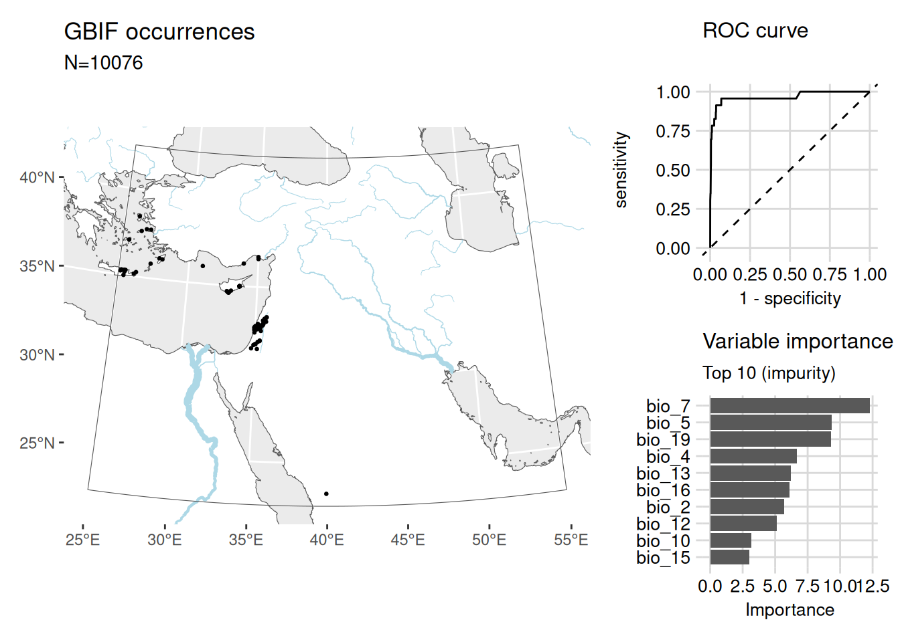
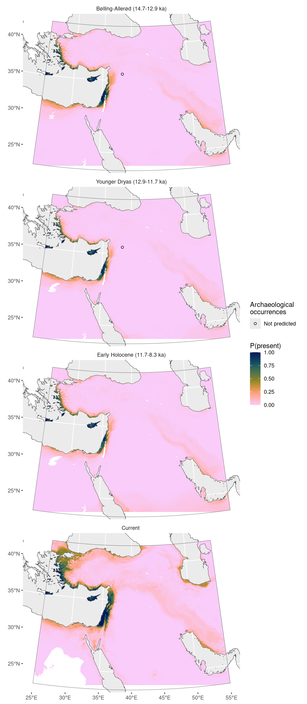
| Site | Age range | N assemblages | Average prop. | Source | Predicted? |
|---|---|---|---|---|---|
| Bølling-Allerød (14.7-12.9 ka) | |||||
| Abu Hureyra | 13.1–13.0 ka | 1 | 0.21% | ORIGINS | no |
| Younger Dryas (12.9-11.7 ka) | |||||
| Abu Hureyra | 13.0–12.1 ka | 1 | 0.14% | ORIGINS | no |
Atriplex prostrata
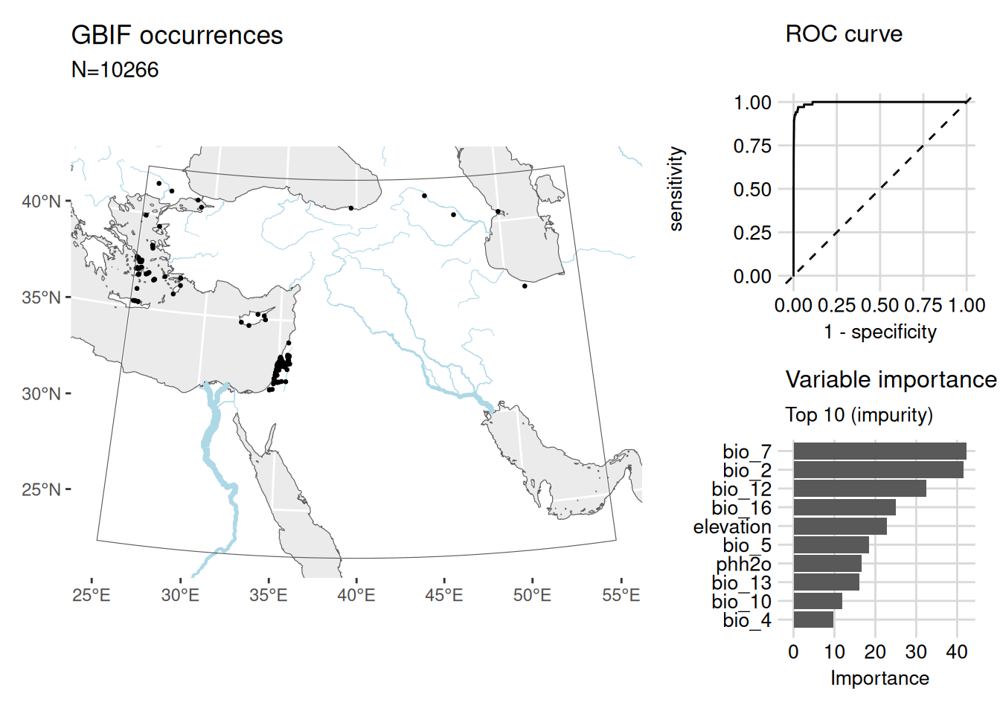
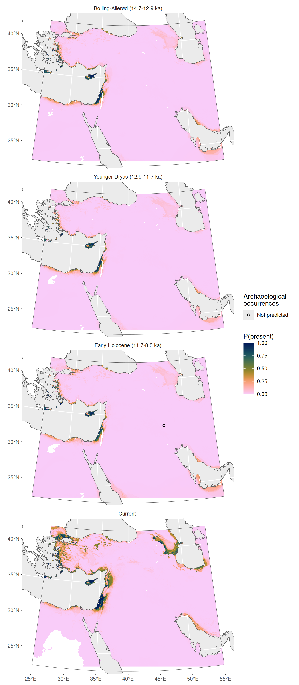
| Site | Age range | N assemblages | Average prop. | Source | Predicted? |
|---|---|---|---|---|---|
| Early Holocene (11.7-8.3 ka) | |||||
| Chogha Golan | 11.2–9.9 ka | 4 | 0.18% | ORIGINS | no |
Avena fatua
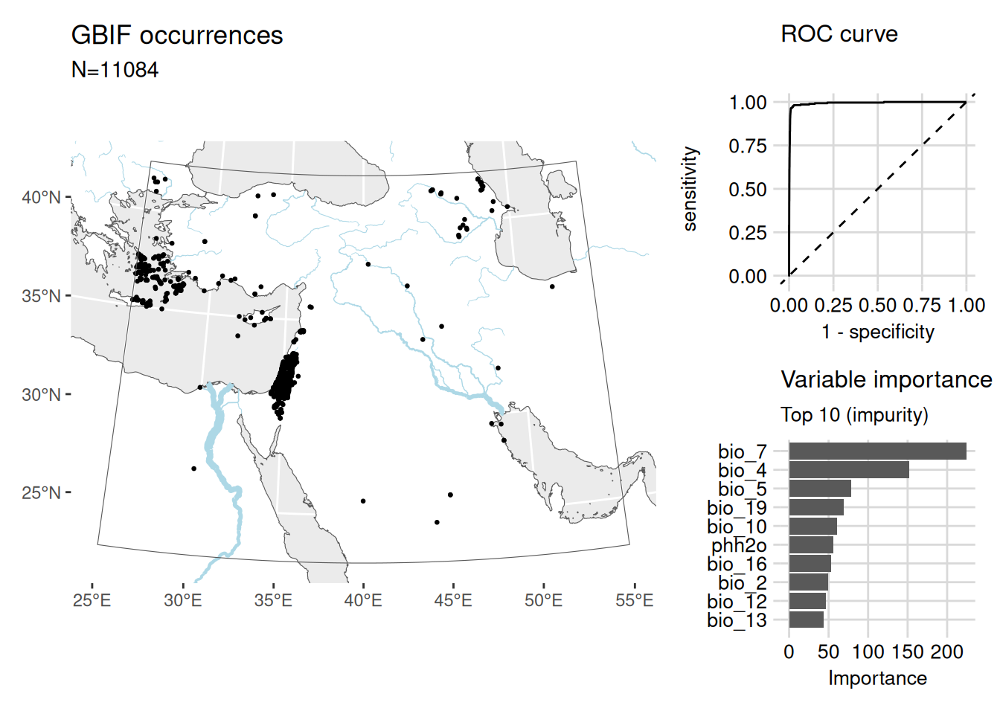
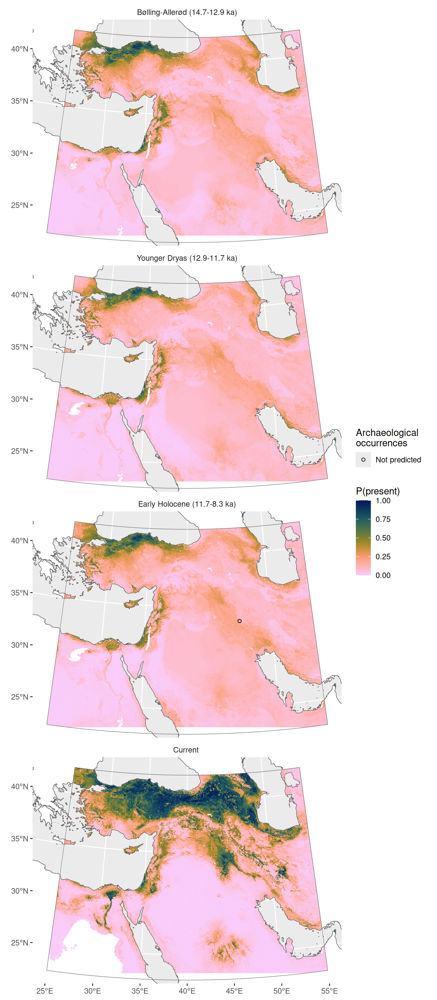
| Site | Age range | N assemblages | Average prop. | Source | Predicted? |
|---|---|---|---|---|---|
| Early Holocene (11.7-8.3 ka) | |||||
| Chogha Golan | 11.2–10.7 ka | 2 | 0.92% | ORIGINS | no |
Bassia arabica
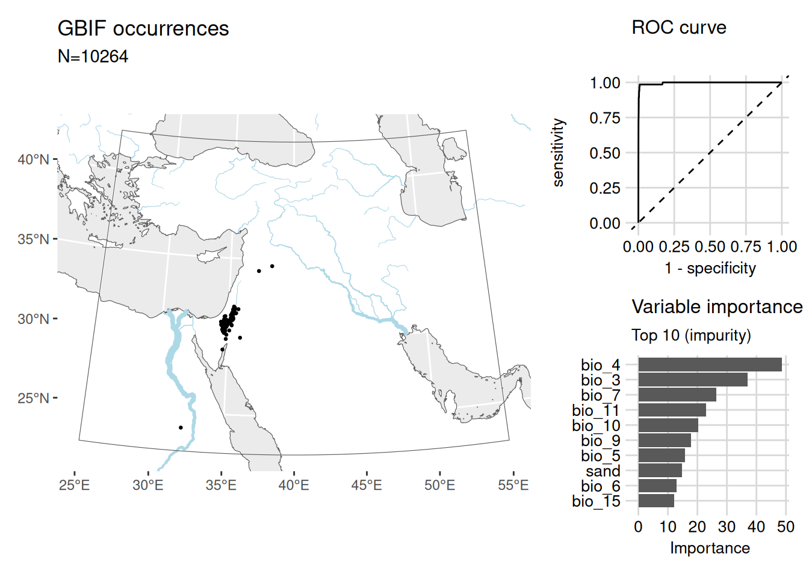
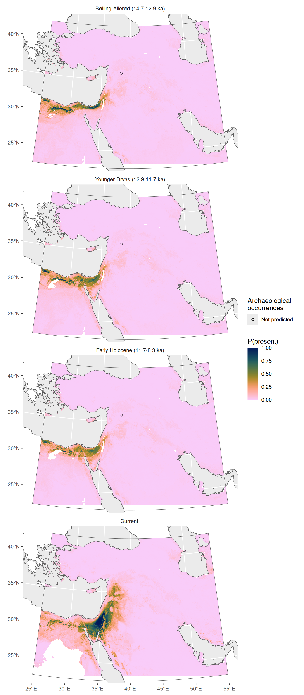
| Site | Age range | N assemblages | Average prop. | Source | Predicted? |
|---|---|---|---|---|---|
| Bølling-Allerød (14.7-12.9 ka) | |||||
| Abu Hureyra | 13.1–13.0 ka | 1 | 0.05% | ORIGINS | no |
| Younger Dryas (12.9-11.7 ka) | |||||
| Abu Hureyra | 13.0–11.8 ka | 2 | 0.61% | ORIGINS | no |
| Early Holocene (11.7-8.3 ka) | |||||
| Abu Hureyra | 9.3–8.2 ka | 1 | 0.71% | ORIGINS | no |
Bolboschoenus maritimus
Including Scirpus maritimus.
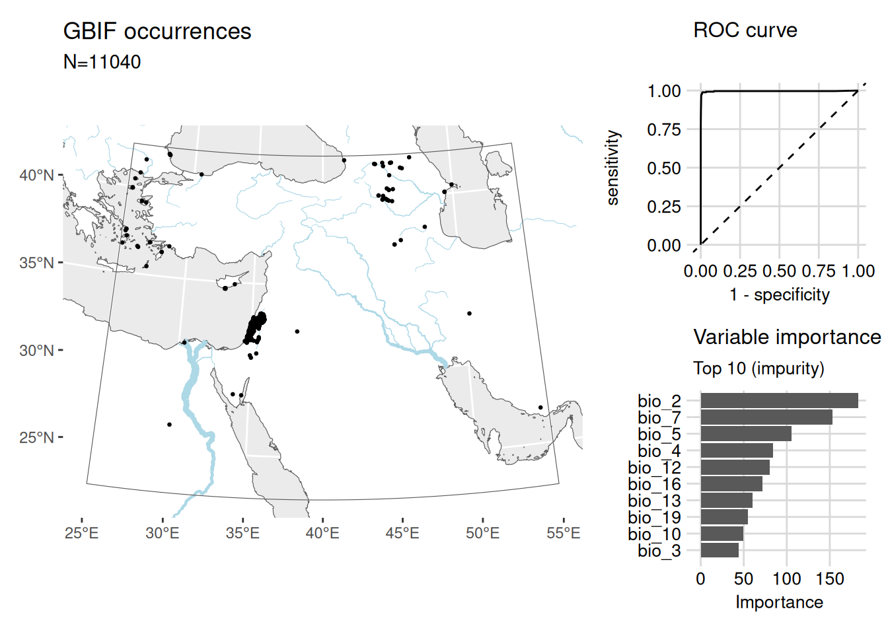
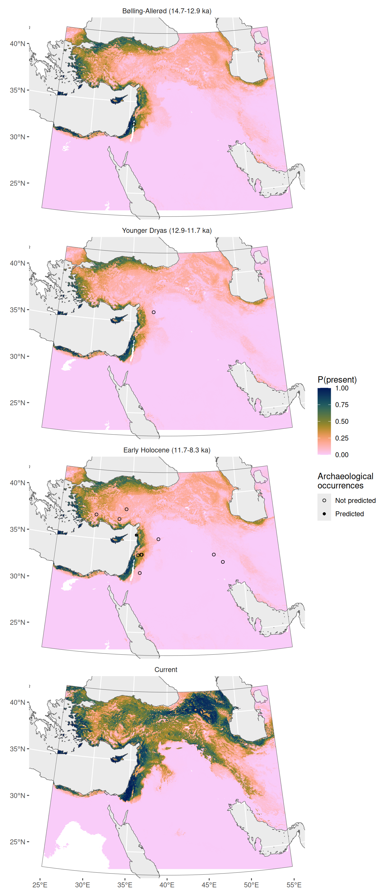
| Site | Age range | N assemblages | Average prop. | Source | Predicted? |
|---|---|---|---|---|---|
| Younger Dryas (12.9-11.7 ka) | |||||
| Mureybet | 12.1–11.9 ka | 1 | 3.74% | ORIGINS | no |
| Early Holocene (11.7-8.3 ka) | |||||
| Körtik Tepe | 11.7–11.2 ka | 1 | 9.43% | ORIGINS | no |
| Mureybet | 11.7–10.8 ka | 2 | 1.69% | ORIGINS | no |
| M'lefaat | 11.3–11.1 ka | 1 | 0.70% | ORIGINS | no |
| Chogha Golan | 11.2–9.8 ka | 4 | 0.27% | ORIGINS | no |
| Ganj Dareh | 10.3–9.2 ka | 5 | 6.72% | ORIGINS | no |
| Çayönü | 10.2–8.8 ka | 5 | 2.22% | ORIGINS | no |
| Tell Aswad | 10.2–9.3 ka | 1 | 0.36% | ORIGINS | no |
| Tell Ghoraifé | 10.1–8.6 ka | 2 | 4.73% | ORIGINS | no |
| Aşıklı Höyük | 9.9–9.4 ka | 1 | 0.01% | ORIGINS | no |
| Tell Halula | 9.9–9.1 ka | 1 | 0.93% | COMPAG | no |
| Ais Giorkis | 9.6–9.4 ka | 1 | 0.07% | ORIGINS | yes |
| Sabi Abyad II | 9.5–8.8 ka | 1 | 0.72% | ORIGINS | no |
| Tell Ramad | 9.3–8.6 ka | 2 | 0.02% | ORIGINS | no |
| Bouqras | 9.2–8.6 ka | 1 | 2.50% | ORIGINS | no |
| Tell Nebi Mend | 9.0–8.6 ka | 1 | 5.62% | COMPAG | no |
| Ras Shamra | 8.8–8.3 ka | 1 | 1.98% | ORIGINS | no |
Brachypodium distachyon
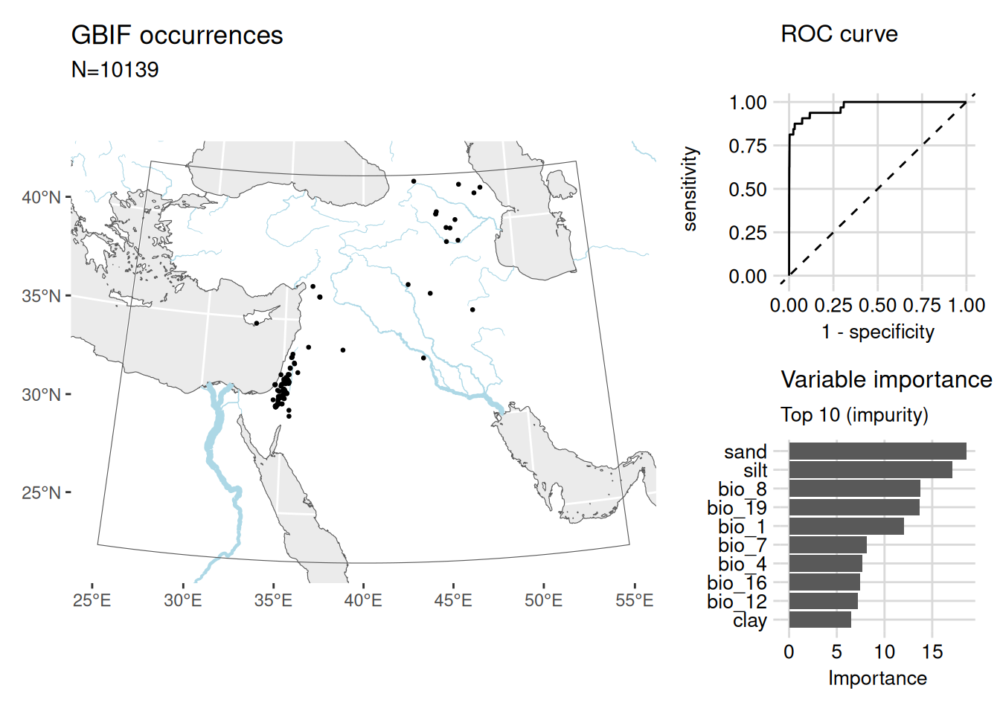
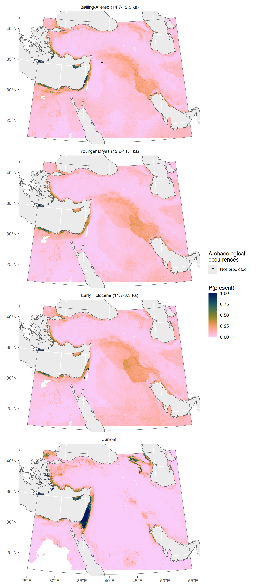
| Site | Age range | N assemblages | Average prop. | Source | Predicted? |
|---|---|---|---|---|---|
| Bølling-Allerød (14.7-12.9 ka) | |||||
| Abu Hureyra | 13.1–13.0 ka | 1 | 0.10% | ORIGINS | no |
| Younger Dryas (12.9-11.7 ka) | |||||
| Abu Hureyra | 13.0–11.8 ka | 2 | 0.46% | ORIGINS | no |
| Early Holocene (11.7-8.3 ka) | |||||
| Gesher | 11.5–11.2 ka | 1 | 0.50% | ORIGINS | no |
| Nahal Hemar | 10.1–9.3 ka | 1 | 0.09% | ORIGINS | no |
Bromus sterilis
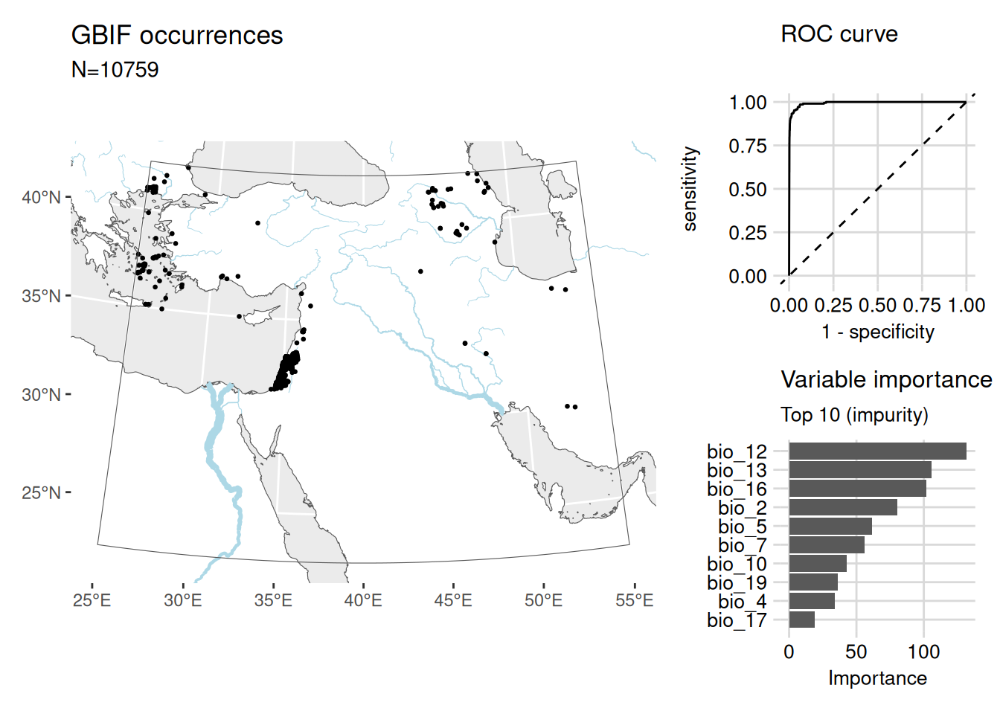
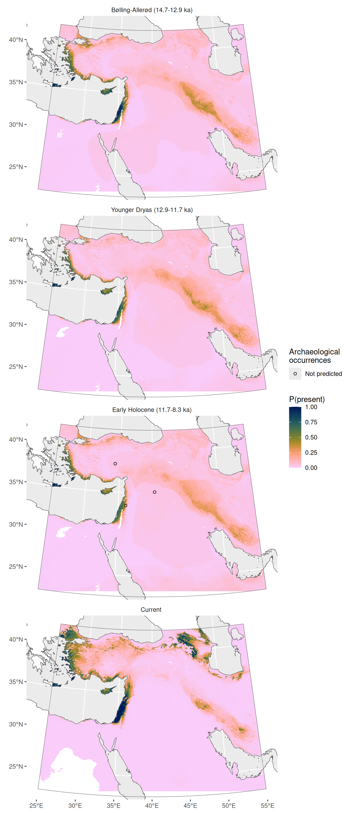
| Site | Age range | N assemblages | Average prop. | Source | Predicted? |
|---|---|---|---|---|---|
| Early Holocene (11.7-8.3 ka) | |||||
| Aşıklı Höyük | 9.9–9.4 ka | 1 | 0.01% | ORIGINS | no |
| Bouqras | 9.2–8.6 ka | 1 | 0.03% | ORIGINS | no |
| Tell Ramad | 8.9–8.6 ka | 1 | 0.00% | ORIGINS | no |
Buglossoides arvensis
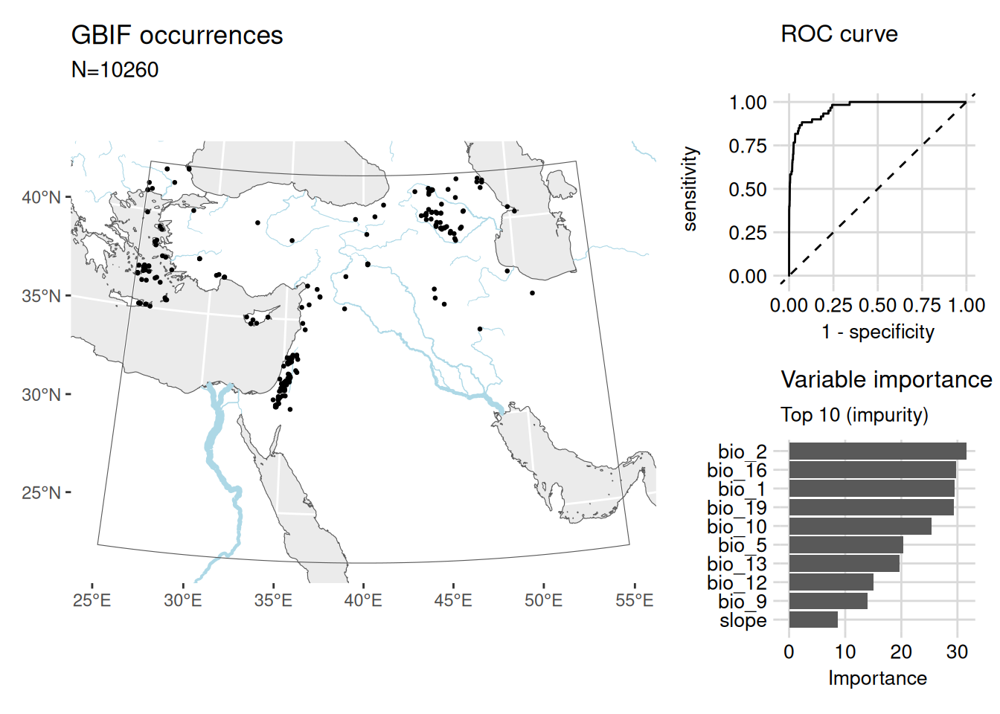
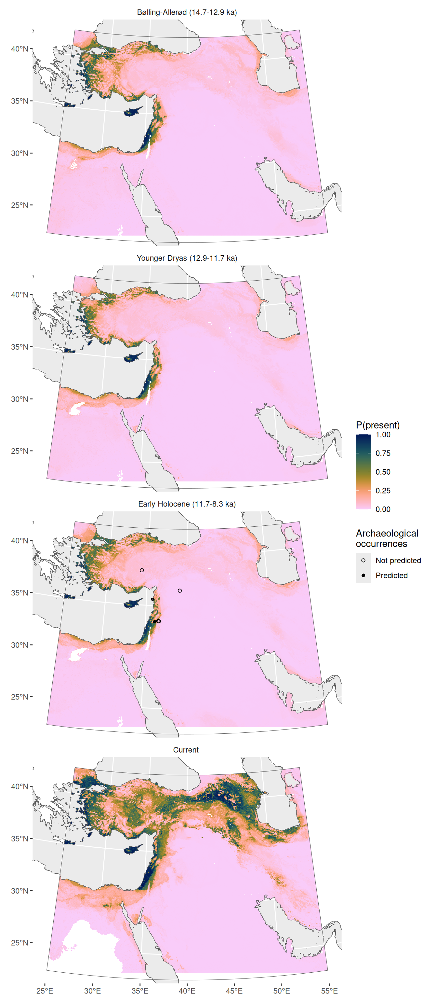
| Site | Age range | N assemblages | Average prop. | Source | Predicted? |
|---|---|---|---|---|---|
| Bølling-Allerød (14.7-12.9 ka) | |||||
| Wadi Hammeh 27 | 14.1–12.7 ka | 1 | 0.03% | ORIGINS | yes |
| Younger Dryas (12.9-11.7 ka) | |||||
| Mureybet | 12.1–11.9 ka | 1 | 0.13% | ORIGINS | no |
| Early Holocene (11.7-8.3 ka) | |||||
| Mureybet | 11.7–11.2 ka | 1 | 0.05% | ORIGINS | no |
| Chogha Golan | 11.2–9.6 ka | 3 | 1.07% | ORIGINS | no |
| Tell Aswad | 10.8–9.3 ka | 2 | 0.15% | ORIGINS | no |
| Wadi Jilat 7 | 10.2–9.3 ka | 1 | 0.03% | ORIGINS | no |
| Hacılar | 10.2–9.4 ka | 1 | 2.20% | ORIGINS | no |
| Tell Ghoraifé | 10.1–8.6 ka | 2 | 4.73% | ORIGINS | no |
| Ali Kosh | 10.1–8.0 ka | 3 | 0.27% | ORIGINS | no |
| Aşıklı Höyük | 9.9–9.4 ka | 1 | 19.19% | ORIGINS | no |
| Can Hasan III | 9.4–8.6 ka | 1 | 66.34% | ORIGINS | no |
| Tell Ramad | 9.3–8.6 ka | 2 | 0.21% | ORIGINS | no |
| Wadi Jilat 13 | 9.1–8.4 ka | 3 | 0.30% | ORIGINS | no |
| Ras Shamra | 8.8–8.3 ka | 1 | 0.05% | ORIGINS | yes |
Buglossoides tenuiflora
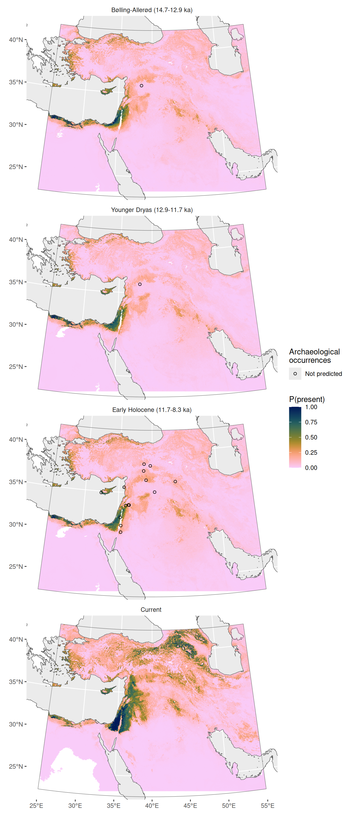
| Site | Age range | N assemblages | Average prop. | Source | Predicted? |
|---|---|---|---|---|---|
| Bølling-Allerød (14.7-12.9 ka) | |||||
| Abu Hureyra | 13.1–13.0 ka | 1 | 0.95% | ORIGINS | no |
| Younger Dryas (12.9-11.7 ka) | |||||
| Abu Hureyra | 13.0–11.8 ka | 2 | 1.74% | ORIGINS | no |
| Mureybet | 12.1–11.9 ka | 1 | 9.50% | ORIGINS | no |
| Early Holocene (11.7-8.3 ka) | |||||
| Mureybet | 11.7–10.8 ka | 2 | 10.47% | ORIGINS | no |
| Netiv Hagdud | 11.6–10.6 ka | 1 | 0.15% | ORIGINS | yes |
| M'lefaat | 11.3–11.1 ka | 1 | 0.63% | ORIGINS | no |
| Tell Aswad | 11.2–9.3 ka | 3 | 0.23% | ORIGINS | no |
| El-Hemmeh | 11.1–10.5 ka | 1 | 1.01% | ORIGINS | no |
| Cafer Höyük | 10.6–9.7 ka | 1 | 0.58% | ORIGINS | no |
| Mylouthkia | 10.6–10.2 ka | 1 | 0.21% | ORIGINS | yes |
| Nevalı Çori | 10.4–10.2 ka | 1 | 0.35% | ORIGINS | no |
| Tell Ghoraifé | 10.1–8.6 ka | 2 | 2.01% | ORIGINS | no |
| Basta | 9.6–8.8 ka | 2 | 22.13% | ORIGINS | no |
| Sabi Abyad II | 9.5–8.8 ka | 1 | 0.07% | ORIGINS | no |
| Abu Hureyra | 9.3–8.2 ka | 1 | 4.48% | ORIGINS | no |
| Tell Ramad | 9.3–8.6 ka | 2 | 0.68% | ORIGINS | no |
| Çayönü | 9.2–8.9 ka | 1 | 0.05% | ORIGINS | no |
| Bouqras | 9.2–8.6 ka | 1 | 2.24% | ORIGINS | no |
| Ras Shamra | 8.8–8.3 ka | 1 | 0.05% | ORIGINS | no |
Capparis spinosa
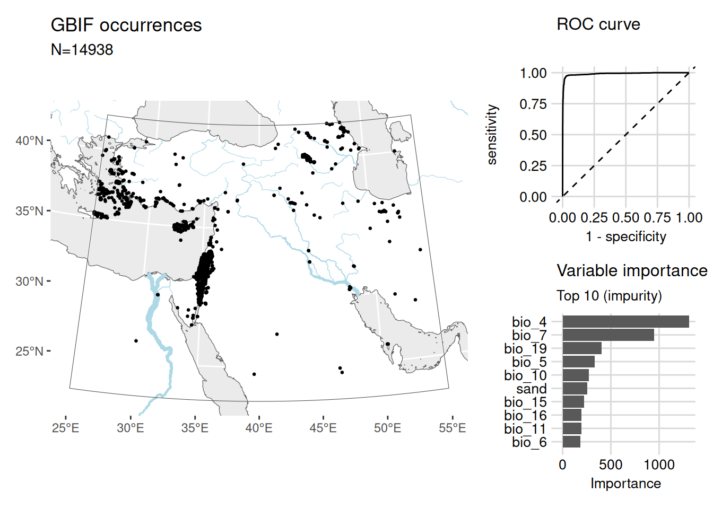
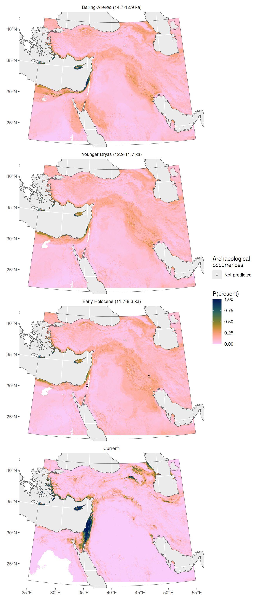
| Site | Age range | N assemblages | Average prop. | Source | Predicted? |
|---|---|---|---|---|---|
| Early Holocene (11.7-8.3 ka) | |||||
| Nahal Hemar | 10.1–9.3 ka | 1 | 0.09% | ORIGINS | no |
| Ali Kosh | 10.1–8.0 ka | 3 | 0.10% | ORIGINS | no |
Capsella bursa-pastoris
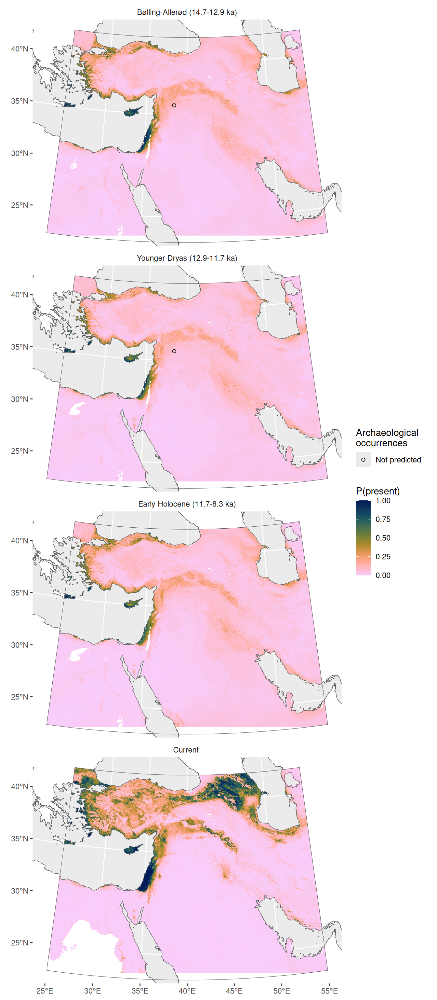
| Site | Age range | N assemblages | Average prop. | Source | Predicted? |
|---|---|---|---|---|---|
| Bølling-Allerød (14.7-12.9 ka) | |||||
| Abu Hureyra | 13.1–13.0 ka | 1 | 0.05% | ORIGINS | no |
| Younger Dryas (12.9-11.7 ka) | |||||
| Abu Hureyra | 13.0–12.1 ka | 1 | 0.05% | ORIGINS | no |
Carex divisa
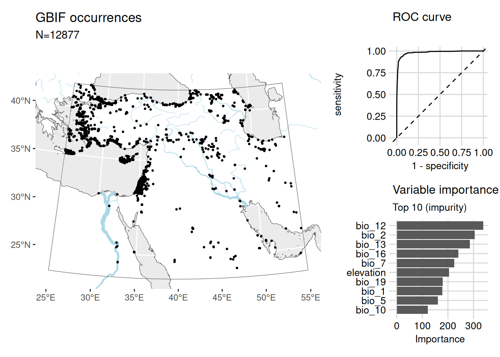
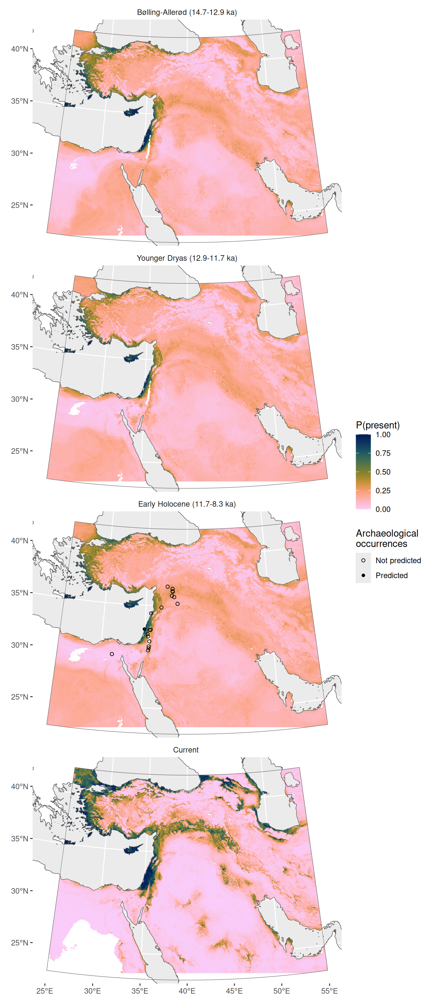
| Site | Age range | N assemblages | Average prop. | Source | Predicted? |
|---|---|---|---|---|---|
| Early Holocene (11.7-8.3 ka) | |||||
| Tell Aswad | 11.2–9.3 ka | 3 | 3.33% | ORIGINS | no |
| Tell Ghoraifé | 10.1–8.6 ka | 2 | 4.96% | ORIGINS | no |
| Aşıklı Höyük | 9.9–9.4 ka | 1 | 0.03% | ORIGINS | no |
| Sabi Abyad II | 9.5–8.8 ka | 1 | 1.62% | ORIGINS | no |
| Tell Ramad | 9.3–8.6 ka | 2 | 0.01% | ORIGINS | no |
Ceratonia siliqua
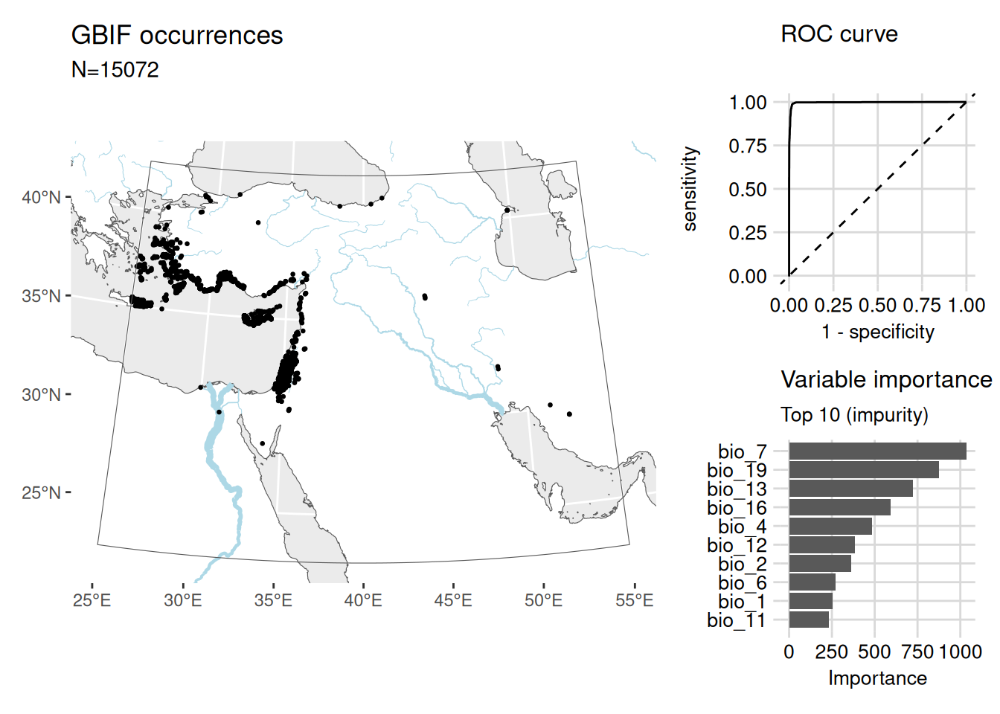
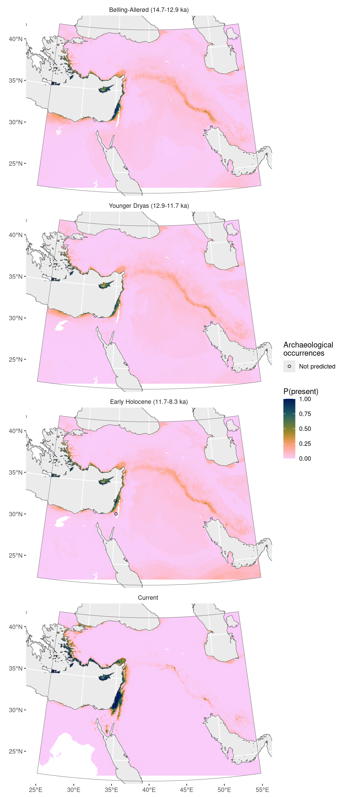
| Site | Age range | N assemblages | Average prop. | Source | Predicted? |
|---|---|---|---|---|---|
| Early Holocene (11.7-8.3 ka) | |||||
| Nahal Oren | 10.8–9.6 ka | 1 | 9.52% | ORIGINS | yes |
| Nahal Hemar | 10.1–9.3 ka | 1 | 0.14% | ORIGINS | no |
Chenopodium album
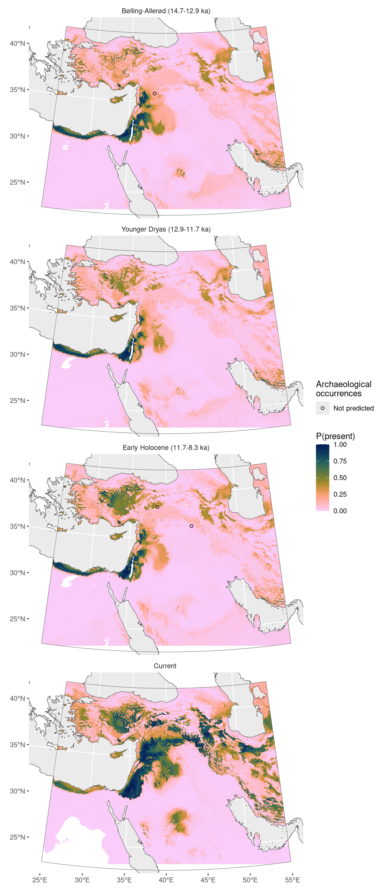
| Site | Age range | N assemblages | Average prop. | Source | Predicted? |
|---|---|---|---|---|---|
| Younger Dryas (12.9-11.7 ka) | |||||
| Mureybet | 12.1–11.9 ka | 1 | 1.01% | ORIGINS | no |
| Early Holocene (11.7-8.3 ka) | |||||
| Mureybet | 11.7–11.2 ka | 1 | 0.05% | ORIGINS | no |
| Hacılar | 10.2–9.4 ka | 1 | 1.10% | ORIGINS | no |
| Aşıklı Höyük | 9.9–9.4 ka | 1 | 0.09% | ORIGINS | no |
| Can Hasan III | 9.4–8.6 ka | 1 | 0.02% | ORIGINS | no |
Cicer reticulatum
Including Cicer arietinum.
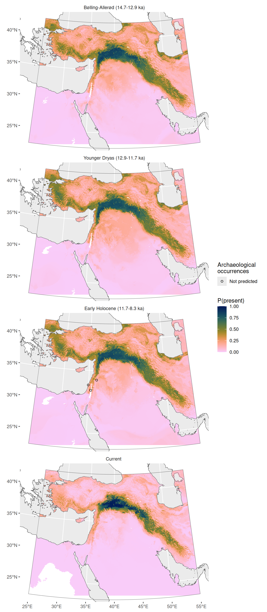
| Site | Age range | N assemblages | Average prop. | Source | Predicted? |
|---|---|---|---|---|---|
| Early Holocene (11.7-8.3 ka) | |||||
| Tell Ghoraifé | 10.1–9.0 ka | 1 | 0.99% | ORIGINS | no |
| Atlit-Yam | 9.0–8.0 ka | 1 | 0.04% | ORIGINS | no |
| Tell es-Sultan | 8.9–8.2 ka | 1 | 0.03% | ORIGINS | no |
Citrullus colocynthis
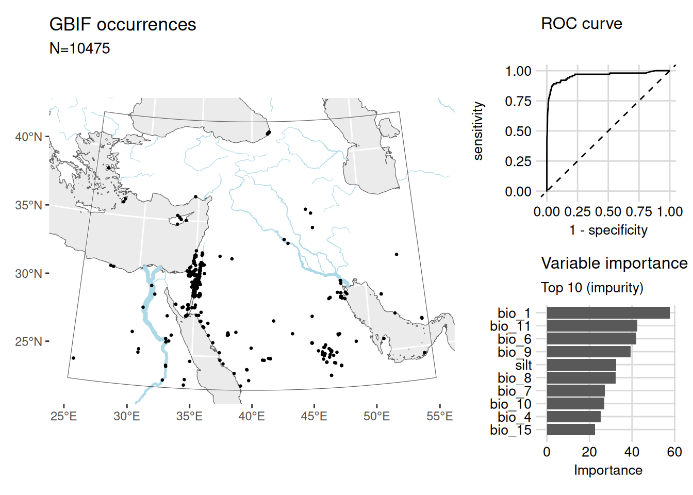
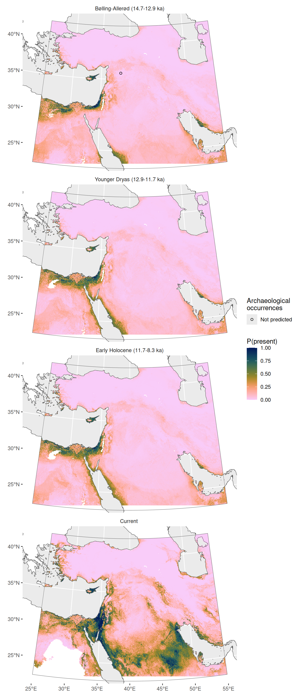
| Site | Age range | N assemblages | Average prop. | Source | Predicted? |
|---|---|---|---|---|---|
| Bølling-Allerød (14.7-12.9 ka) | |||||
| Abu Hureyra | 13.1–13.0 ka | 1 | 0.10% | ORIGINS | no |
| Younger Dryas (12.9-11.7 ka) | |||||
| Abu Hureyra | 13.0–11.8 ka | 2 | 0.13% | ORIGINS | no |
| Early Holocene (11.7-8.3 ka) | |||||
| Nahal Hemar | 10.1–9.3 ka | 1 | 1.96% | ORIGINS | no |
Crithopsis delileana
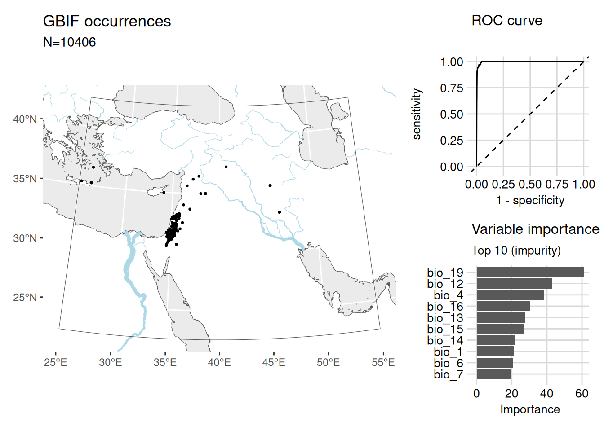
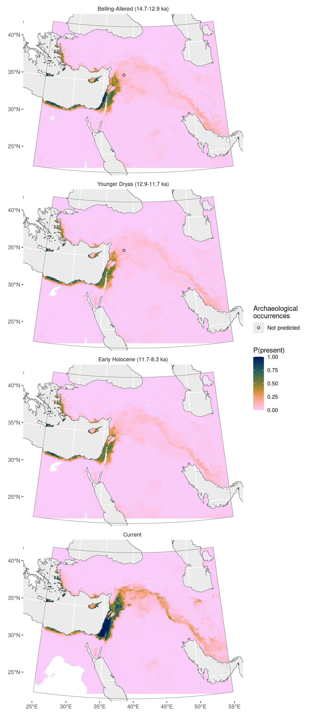
| Site | Age range | N assemblages | Average prop. | Source | Predicted? |
|---|---|---|---|---|---|
| Bølling-Allerød (14.7-12.9 ka) | |||||
| Abu Hureyra | 13.1–13.0 ka | 1 | 0.05% | ORIGINS | no |
| Younger Dryas (12.9-11.7 ka) | |||||
| Abu Hureyra | 13.0–11.8 ka | 2 | 0.06% | ORIGINS | no |
Erodium ciconium
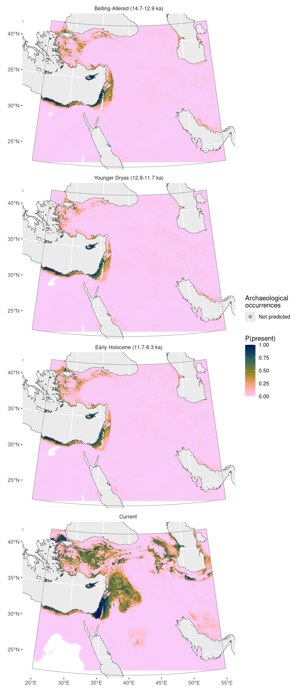
| Site | Age range | N assemblages | Average prop. | Source | Predicted? |
|---|---|---|---|---|---|
| Early Holocene (11.7-8.3 ka) | |||||
| Netiv Hagdud | 11.6–10.6 ka | 1 | 0.02% | ORIGINS | no |
| Nahal Hemar | 10.1–9.3 ka | 1 | 0.14% | ORIGINS | no |
Ficus carica
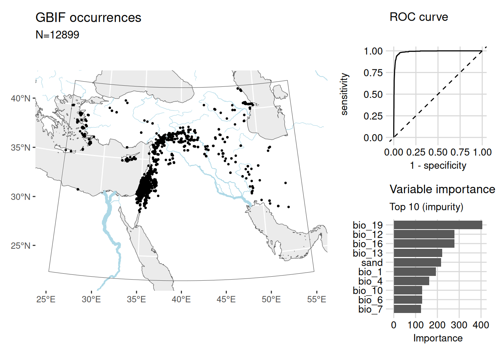
| Site | Age range | N assemblages | Average prop. | Source | Predicted? |
|---|---|---|---|---|---|
| Early Holocene (11.7-8.3 ka) | |||||
| Netiv Hagdud | 11.6–10.6 ka | 1 | 28.06% | ORIGINS | no |
| Wadi Faynan 16 | 11.6–11.2 ka | 1 | 16.71% | ORIGINS | no |
| Gesher | 11.5–11.2 ka | 1 | 17.91% | ORIGINS | yes |
| Jerf el Ahmar | 11.4–10.7 ka | 1 | 0.02% | ORIGINS | no |
| El-Hemmeh | 11.1–10.5 ka | 1 | 15.77% | ORIGINS | no |
| Dja'de | 10.7–10.2 ka | 1 | 0.13% | ORIGINS | no |
| Halula | 9.9–9.5 ka | 1 | 0.55% | ORIGINS | no |
| Atlit-Yam | 9.0–8.0 ka | 1 | 67.76% | ORIGINS | yes |
Fumaria densiflora
| Site | Age range | N assemblages | Average prop. | Source | Predicted? |
|---|---|---|---|---|---|
| Early Holocene (11.7-8.3 ka) | |||||
| Tell Aswad | 10.2–9.3 ka | 1 | 0.00% | ORIGINS | no |
| Nahal Hemar | 10.1–9.3 ka | 1 | 0.56% | ORIGINS | no |
| Tell Ramad | 9.3–8.6 ka | 2 | 0.01% | ORIGINS | no |
Gypsophila elegans
| Site | Age range | N assemblages | Average prop. | Source | Predicted? |
|---|---|---|---|---|---|
| Bølling-Allerød (14.7-12.9 ka) | |||||
| Abu Hureyra | 13.1–13.0 ka | 1 | 0.31% | ORIGINS | no |
| Younger Dryas (12.9-11.7 ka) | |||||
| Abu Hureyra | 13.0–11.8 ka | 2 | 0.43% | ORIGINS | no |
Gypsophila pilosa
| Site | Age range | N assemblages | Average prop. | Source | Predicted? |
|---|---|---|---|---|---|
| Bølling-Allerød (14.7-12.9 ka) | |||||
| Abu Hureyra | 13.1–13.0 ka | 1 | 0.33% | ORIGINS | no |
| Younger Dryas (12.9-11.7 ka) | |||||
| Abu Hureyra | 13.0–11.8 ka | 2 | 0.46% | ORIGINS | no |
| Early Holocene (11.7-8.3 ka) | |||||
| M'lefaat | 11.3–11.1 ka | 1 | 3.55% | ORIGINS | no |
| Cafer Höyük | 10.6–9.7 ka | 1 | 0.33% | ORIGINS | no |
Gypsophila vaccaria
Including Vaccaria pyramidata.
| Site | Age range | N assemblages | Average prop. | Source | Predicted? |
|---|---|---|---|---|---|
| Early Holocene (11.7-8.3 ka) | |||||
| Sheikh-e Abad | 11.8–8.4 ka | 2 | 0.58% | ADEMNES | no |
| M'lefaat | 11.3–11.1 ka | 1 | 0.40% | ORIGINS | no |
| Tell Aswad | 10.2–9.3 ka | 1 | 0.04% | ORIGINS | no |
| Tell Ghoraifé | 10.1–8.6 ka | 2 | 0.22% | ORIGINS | no |
| Tell Ramad | 9.3–8.6 ka | 2 | 0.02% | ORIGINS | no |
Halothamnus hierochunticus

| Site | Age range | N assemblages | Average prop. | Source | Predicted? |
|---|---|---|---|---|---|
| Younger Dryas (12.9-11.7 ka) | |||||
| Abu Hureyra | 12.1–11.8 ka | 1 | 0.15% | ORIGINS | no |
| Early Holocene (11.7-8.3 ka) | |||||
| Netiv Hagdud | 11.6–10.6 ka | 1 | 0.01% | ORIGINS | no |
Helianthemum ledifolium
| Site | Age range | N assemblages | Average prop. | Source | Predicted? |
|---|---|---|---|---|---|
| Early Holocene (11.7-8.3 ka) | |||||
| Tell Ramad | 9.3–8.6 ka | 2 | 8.40% | ORIGINS | no |
Helianthemum salicifolium
| Site | Age range | N assemblages | Average prop. | Source | Predicted? |
|---|---|---|---|---|---|
| Early Holocene (11.7-8.3 ka) | |||||
| Nevalı Çori | 10.4–10.2 ka | 1 | 3.48% | ORIGINS | no |
| Tell Ramad | 8.9–8.6 ka | 1 | 0.00% | ORIGINS | no |
Hordeum bulbosum

| Site | Age range | N assemblages | Average prop. | Source | Predicted? |
|---|---|---|---|---|---|
| Early Holocene (11.7-8.3 ka) | |||||
| Jerf el Ahmar | 11.4–10.7 ka | 1 | 0.24% | ORIGINS | no |
| Beidha | 10.1–9.5 ka | 1 | 0.00% | ORIGINS | no |
| Abu Hureyra | 9.3–8.2 ka | 1 | 4.01% | ORIGINS | no |
| Tell Maghzaliyeh | 9.0–8.2 ka | 1 | 0.14% | ORIGINS | no |
Hordeum murinum
| Site | Age range | N assemblages | Average prop. | Source | Predicted? |
|---|---|---|---|---|---|
| Bølling-Allerød (14.7-12.9 ka) | |||||
| Abu Hureyra | 13.1–13.0 ka | 1 | 0.21% | ORIGINS | no |
| Early Holocene (11.7-8.3 ka) | |||||
| Netiv Hagdud | 11.6–10.6 ka | 1 | 0.13% | ORIGINS | no |
| Jerf el Ahmar | 11.4–10.7 ka | 1 | 2.55% | ORIGINS | no |
| El-Hemmeh | 11.1–10.5 ka | 1 | 0.32% | ORIGINS | no |
| Tell Maghzaliyeh | 9.0–8.2 ka | 1 | 29.97% | ORIGINS | no |
Hordeum spontaneum
Including Hordeum vulgare.
| Site | Age range | N assemblages | Average prop. | Source | Predicted? |
|---|---|---|---|---|---|
| Bølling-Allerød (14.7-12.9 ka) | |||||
| Wadi Hammeh 27 | 14.1–12.7 ka | 1 | 0.18% | ORIGINS | yes |
| Younger Dryas (12.9-11.7 ka) | |||||
| Iraq ed-Dubb | 13.2–12.2 ka | 2 | 0.95% | ORIGINS | yes |
| Abu Hureyra | 13.0–11.8 ka | 2 | 0.17% | ORIGINS | no |
| Mureybet | 12.1–11.9 ka | 1 | 0.18% | ORIGINS | no |
| Early Holocene (11.7-8.3 ka) | |||||
| Tell es-Sultan | 12.2–8.2 ka | 4 | 12.74% | ORIGINS | yes |
| Hayonim Cave | 12.2–10.9 ka | 1 | 100.00% | ORIGINS | no |
| Iraq ed-Dubb | 11.7–11.2 ka | 2 | 0.78% | ORIGINS | yes |
| Mureybet | 11.7–10.8 ka | 3 | 2.27% | ORIGINS | no |
| Netiv Hagdud | 11.6–10.6 ka | 1 | 29.33% | ORIGINS | no |
| Gesher | 11.5–11.2 ka | 1 | 0.50% | ORIGINS | yes |
| Jerf el Ahmar | 11.4–10.7 ka | 2 | 21.02% | ORIGINS | no |
| Zahrat adh-Dhra 2 | 11.4–10.4 ka | 2 | 0.11% | ORIGINS | no |
| Chogha Golan | 11.2–9.7 ka | 14 | 6.02% | ORIGINS | no |
| Gilgal I | 11.2–11.2 ka | 1 | 68.24% | ORIGINS | no |
| Tell 'Abr | 11.2–10.8 ka | 1 | 4.20% | ORIGINS | no |
| El-Hemmeh | 11.1–10.5 ka | 1 | 4.65% | ORIGINS | no |
| Kastros | 10.8–9.9 ka | 1 | 2.36% | ORIGINS | no |
| Kissonerga Mosphilia | 10.8–10.3 ka | 1 | 1.00% | ADEMNES | yes |
| Göbekli Tepe | 10.8–9.6 ka | 1 | 16.00% | ORIGINS | no |
| Dja'de | 10.7–10.2 ka | 2 | 5.98% | ORIGINS | no |
| Sheikh-e Abad | 10.7–8.4 ka | 1 | 0.12% | ADEMNES | no |
| Mylouthkia | 10.6–8.8 ka | 2 | 11.31% | ORIGINS | yes |
| Cafer Höyük | 10.6–9.1 ka | 2 | 0.14% | ORIGINS | no |
| East Chia Sabz | 10.4–9.6 ka | 1 | 7.43% | ORIGINS | no |
| Tepe Abdul Hosein | 10.3–9.1 ka | 1 | 66.67% | ORIGINS | no |
| Wadi Jilat 7 | 10.2–9.3 ka | 6 | 1.52% | ORIGINS | no |
| Hacılar | 10.2–9.4 ka | 2 | 1.10% | ORIGINS | no |
| Tell Aswad | 10.2–9.3 ka | 1 | 0.04% | ORIGINS | no |
| Nahal Hemar | 10.1–9.3 ka | 2 | 1.07% | ORIGINS | no |
| Ali Kosh | 10.1–8.0 ka | 5 | 0.86% | ORIGINS | no |
| Beidha | 10.1–9.5 ka | 1 | 30.11% | ORIGINS | no |
| Aşıklı Höyük | 9.9–9.4 ka | 3 | 0.06% | ORIGINS | no |
| Çayönü | 9.9–8.8 ka | 4 | 0.43% | ORIGINS | no |
| Halula | 9.9–9.5 ka | 1 | 0.22% | ORIGINS | no |
| Ais Giorkis | 9.6–9.4 ka | 1 | 4.68% | ORIGINS | yes |
| Wadi Fidan A | 9.5–8.6 ka | 2 | 2.14% | ORIGINS | no |
| Sabi Abyad II | 9.5–8.8 ka | 1 | 0.51% | ORIGINS | no |
| Tell Ghoraifé | 9.5–8.6 ka | 1 | 0.10% | ORIGINS | no |
| Basta | 9.4–9.2 ka | 1 | 3.93% | ORIGINS | no |
| Ras Shamra | 9.4–8.3 ka | 2 | 0.50% | ORIGINS | no |
| Wadi Fidan | 9.4–8.4 ka | 3 | 2.33% | ADEMNES | no |
| Dhuweila | 9.4–9.1 ka | 1 | 3.12% | ORIGINS | no |
| Can Hasan III | 9.4–8.6 ka | 2 | 0.53% | ORIGINS | no |
| Azraq 31 | 9.3–9.2 ka | 1 | 2.29% | ORIGINS | no |
| Tell Ramad | 9.3–8.6 ka | 7 | 0.20% | ORIGINS | yes |
| Çatalhöyük | 9.2–8.3 ka | 2 | 0.00% | ORIGINS | no |
| Wadi Fidan C | 9.2–8.2 ka | 2 | 1.58% | ORIGINS | no |
| Wadi Jilat 13 | 9.1–8.4 ka | 5 | 0.40% | ORIGINS | no |
| Atlit-Yam | 9.0–8.0 ka | 1 | 1.52% | ORIGINS | yes |
| Tell Maghzaliyeh | 9.0–8.2 ka | 2 | 6.34% | ORIGINS | no |
Juglans regia
| Site | Age range | N assemblages | Average prop. | Source | Predicted? |
|---|---|---|---|---|---|
| Early Holocene (11.7-8.3 ka) | |||||
| Nahal Hemar | 10.1–9.3 ka | 1 | 0.09% | ORIGINS | no |
| Can Hasan III | 9.4–8.6 ka | 1 | 0.02% | ORIGINS | no |
Lathyrus aphaca
| Site | Age range | N assemblages | Average prop. | Source | Predicted? |
|---|---|---|---|---|---|
| Early Holocene (11.7-8.3 ka) | |||||
| Çayönü | 10.2–8.8 ka | 4 | 1.51% | ORIGINS | no |
Lathyrus cicera
| Site | Age range | N assemblages | Average prop. | Source | Predicted? |
|---|---|---|---|---|---|
| Early Holocene (11.7-8.3 ka) | |||||
| Tell Ghoraifé | 10.1–9.0 ka | 1 | 0.33% | ORIGINS | no |
| Tell Ramad | 8.9–8.6 ka | 1 | 0.00% | ORIGINS | yes |
Lathyrus oleraceus
Including Pisum sativum and Pisum elatius.
| Site | Age range | N assemblages | Average prop. | Source | Predicted? |
|---|---|---|---|---|---|
| Early Holocene (11.7-8.3 ka) | |||||
| Jerf el Ahmar | 11.4–10.7 ka | 1 | 0.01% | ORIGINS | no |
| Kastros | 10.8–9.9 ka | 1 | 0.37% | ORIGINS | yes |
| Dja'de | 10.7–10.2 ka | 1 | 0.04% | ORIGINS | no |
| Cafer Höyük | 10.6–9.7 ka | 1 | 0.42% | ORIGINS | no |
| Aşıklı Höyük | 9.9–9.4 ka | 1 | 0.01% | ORIGINS | no |
| Basta | 9.4–9.2 ka | 2 | 1.94% | ORIGINS | no |
| Tell es-Sultan | 8.9–8.2 ka | 1 | 4.52% | ORIGINS | no |
Lathyrus sativus
| Site | Age range | N assemblages | Average prop. | Source | Predicted? |
|---|---|---|---|---|---|
| Early Holocene (11.7-8.3 ka) | |||||
| Cafer Höyük | 10.6–9.1 ka | 3 | 0.96% | ORIGINS | no |
| Nevalı Çori | 10.4–10.2 ka | 1 | 0.37% | ORIGINS | no |
Lepidium perfoliatum
| Site | Age range | N assemblages | Average prop. | Source | Predicted? |
|---|---|---|---|---|---|
| Bølling-Allerød (14.7-12.9 ka) | |||||
| Abu Hureyra | 13.1–13.0 ka | 1 | 2.65% | ORIGINS | no |
| Younger Dryas (12.9-11.7 ka) | |||||
| Abu Hureyra | 13.0–11.8 ka | 2 | 1.12% | ORIGINS | no |
Linum bienne
Including Linum usitatissimum.
| Site | Age range | N assemblages | Average prop. | Source | Predicted? |
|---|---|---|---|---|---|
| Early Holocene (11.7-8.3 ka) | |||||
| Tell Aswad | 10.2–9.3 ka | 1 | 0.04% | ORIGINS | no |
| Tell Ghoraifé | 10.1–8.6 ka | 2 | 0.87% | ORIGINS | no |
| Ali Kosh | 10.1–8.0 ka | 3 | 0.02% | ORIGINS | no |
| Sabi Abyad II | 9.5–8.8 ka | 1 | 45.23% | ORIGINS | no |
| Ras Shamra | 9.4–8.3 ka | 2 | 0.31% | ORIGINS | no |
| Tell Ramad | 9.3–8.6 ka | 2 | 0.35% | ORIGINS | no |
| Çayönü | 9.2–8.8 ka | 2 | 4.38% | ORIGINS | no |
| Tell es-Sultan | 8.9–8.2 ka | 1 | 0.01% | ORIGINS | no |
Lolium rigidum
| Site | Age range | N assemblages | Average prop. | Source | Predicted? |
|---|---|---|---|---|---|
| Bølling-Allerød (14.7-12.9 ka) | |||||
| Abu Hureyra | 13.1–13.0 ka | 1 | 0.05% | ORIGINS | no |
| Younger Dryas (12.9-11.7 ka) | |||||
| Abu Hureyra | 12.1–11.8 ka | 1 | 0.15% | ORIGINS | no |
| Early Holocene (11.7-8.3 ka) | |||||
| Ali Kosh | 10.1–8.0 ka | 3 | 0.95% | ORIGINS | no |
Lolium temulentum
| Site | Age range | N assemblages | Average prop. | Source | Predicted? |
|---|---|---|---|---|---|
| Early Holocene (11.7-8.3 ka) | |||||
| Nevalı Çori | 10.4–10.2 ka | 1 | 0.00% | ORIGINS | no |
| Tell Ramad | 9.3–8.6 ka | 2 | 0.58% | ORIGINS | no |
Medicago astroites
Including Trigonella astroites.
| Site | Age range | N assemblages | Average prop. | Source | Predicted? |
|---|---|---|---|---|---|
| Younger Dryas (12.9-11.7 ka) | |||||
| Mureybet | 12.1–11.9 ka | 1 | 0.08% | ORIGINS | no |
| Early Holocene (11.7-8.3 ka) | |||||
| Mureybet | 11.7–11.2 ka | 1 | 0.03% | ORIGINS | no |
| Jerf el Ahmar | 11.4–10.7 ka | 1 | 0.03% | ORIGINS | no |
| Tell Aswad | 11.2–9.3 ka | 3 | 22.50% | ORIGINS | yes |
| Dja'de | 10.7–10.2 ka | 1 | 0.03% | ORIGINS | no |
| Ganj Dareh | 10.3–9.2 ka | 3 | 2.97% | ORIGINS | no |
| Aşıklı Höyük | 9.9–9.4 ka | 1 | 0.02% | ORIGINS | no |
| Sabi Abyad II | 9.5–8.8 ka | 1 | 0.04% | ORIGINS | no |
| Tell Ramad | 9.3–8.6 ka | 2 | 1.00% | ORIGINS | yes |
| Bouqras | 9.2–8.6 ka | 1 | 0.47% | ORIGINS | no |
Medicago minima
| Site | Age range | N assemblages | Average prop. | Source | Predicted? |
|---|---|---|---|---|---|
| Early Holocene (11.7-8.3 ka) | |||||
| Netiv Hagdud | 11.6–10.6 ka | 1 | 0.03% | ORIGINS | yes |
| Bouqras | 9.2–8.6 ka | 1 | 0.02% | ORIGINS | no |
Medicago radiata
| Site | Age range | N assemblages | Average prop. | Source | Predicted? |
|---|---|---|---|---|---|
| Early Holocene (11.7-8.3 ka) | |||||
| Jerf el Ahmar | 11.4–10.7 ka | 1 | 0.01% | ORIGINS | no |
| Chogha Golan | 11.2–9.6 ka | 9 | 0.50% | ORIGINS | no |
| Tell Aswad | 11.2–9.3 ka | 2 | 1.63% | ORIGINS | yes |
| El-Hemmeh | 11.1–10.5 ka | 1 | 0.24% | ORIGINS | no |
| Dja'de | 10.7–10.2 ka | 1 | 0.02% | ORIGINS | no |
| Ganj Dareh | 10.2–9.2 ka | 1 | 0.14% | ORIGINS | no |
| Tell Ramad | 9.3–8.6 ka | 2 | 0.27% | ORIGINS | yes |
| Çayönü | 9.2–8.8 ka | 2 | 0.06% | ORIGINS | no |
| Wadi Jilat 13 | 9.1–8.5 ka | 1 | 0.17% | ORIGINS | no |
Moltkia coerulea
| Site | Age range | N assemblages | Average prop. | Source | Predicted? |
|---|---|---|---|---|---|
| Bølling-Allerød (14.7-12.9 ka) | |||||
| Abu Hureyra | 13.1–13.0 ka | 1 | 0.05% | ORIGINS | no |
| Younger Dryas (12.9-11.7 ka) | |||||
| Abu Hureyra | 13.0–12.1 ka | 1 | 0.28% | ORIGINS | no |
Neotorularia torulosa
Including Torularia torulosa.
| Site | Age range | N assemblages | Average prop. | Source | Predicted? |
|---|---|---|---|---|---|
| Bølling-Allerød (14.7-12.9 ka) | |||||
| Abu Hureyra | 13.1–13.0 ka | 1 | 0.05% | ORIGINS | no |
| Younger Dryas (12.9-11.7 ka) | |||||
| Abu Hureyra | 13.0–12.1 ka | 1 | 0.35% | ORIGINS | no |
Peganum harmala
| Site | Age range | N assemblages | Average prop. | Source | Predicted? |
|---|---|---|---|---|---|
| Early Holocene (11.7-8.3 ka) | |||||
| Dja'de | 10.7–10.2 ka | 1 | 0.00% | ORIGINS | no |
| Sabi Abyad II | 9.5–8.8 ka | 1 | 0.11% | ORIGINS | no |
Phalaris paradoxa
| Site | Age range | N assemblages | Average prop. | Source | Predicted? |
|---|---|---|---|---|---|
| Early Holocene (11.7-8.3 ka) | |||||
| Ali Kosh | 10.1–8.0 ka | 3 | 1.83% | ORIGINS | no |
Phragmites australis
| Site | Age range | N assemblages | Average prop. | Source | Predicted? |
|---|---|---|---|---|---|
| Bølling-Allerød (14.7-12.9 ka) | |||||
| Abu Hureyra | 13.1–13.0 ka | 1 | 0.16% | ORIGINS | no |
| Younger Dryas (12.9-11.7 ka) | |||||
| Abu Hureyra | 13.0–11.8 ka | 2 | 0.48% | ORIGINS | no |
| Early Holocene (11.7-8.3 ka) | |||||
| Nevalı Çori | 10.4–10.2 ka | 1 | 0.00% | ORIGINS | no |
Pistacia atlantica
| Site | Age range | N assemblages | Average prop. | Source | Predicted? |
|---|---|---|---|---|---|
| Early Holocene (11.7-8.3 ka) | |||||
| Netiv Hagdud | 11.6–10.6 ka | 1 | 0.25% | ORIGINS | no |
| Jerf el Ahmar | 11.4–10.7 ka | 1 | 4.59% | ORIGINS | no |
| Tell 'Abr | 11.2–10.8 ka | 1 | 0.04% | ORIGINS | no |
| El-Hemmeh | 11.1–10.5 ka | 1 | 0.13% | ORIGINS | no |
| Nahal Hemar | 10.1–9.3 ka | 1 | 21.38% | ORIGINS | no |
| Atlit-Yam | 9.0–8.0 ka | 1 | 2.28% | ORIGINS | yes |
Pistacia terebinthus
Including Pistacia palaestina.
| Site | Age range | N assemblages | Average prop. | Source | Predicted? |
|---|---|---|---|---|---|
| Early Holocene (11.7-8.3 ka) | |||||
| Wadi Jilat 7 | 10.2–9.3 ka | 1 | 0.06% | ORIGINS | no |
| Atlit-Yam | 9.0–8.0 ka | 1 | 5.73% | ORIGINS | yes |
Plantago lagopus
| Site | Age range | N assemblages | Average prop. | Source | Predicted? |
|---|---|---|---|---|---|
| Early Holocene (11.7-8.3 ka) | |||||
| Çayönü | 8.9–8.8 ka | 1 | 0.09% | ORIGINS | no |
| Tell Ramad | 8.9–8.6 ka | 1 | 0.00% | ORIGINS | no |
Poa bulbosa
| Site | Age range | N assemblages | Average prop. | Source | Predicted? |
|---|---|---|---|---|---|
| Early Holocene (11.7-8.3 ka) | |||||
| Netiv Hagdud | 11.6–10.6 ka | 1 | 0.05% | ORIGINS | no |
| Jerf el Ahmar | 11.4–10.7 ka | 1 | 0.03% | ORIGINS | no |
| El-Hemmeh | 11.1–10.5 ka | 1 | 0.19% | ORIGINS | no |
| Dja'de | 10.7–10.2 ka | 1 | 0.04% | ORIGINS | no |
| Cafer Höyük | 10.6–9.7 ka | 1 | 1.41% | ORIGINS | no |
Prosopis farcta
| Site | Age range | N assemblages | Average prop. | Source | Predicted? |
|---|---|---|---|---|---|
| Younger Dryas (12.9-11.7 ka) | |||||
| Abu Hureyra | 13.0–12.1 ka | 1 | 0.05% | ORIGINS | no |
| Early Holocene (11.7-8.3 ka) | |||||
| Ali Kosh | 10.1–8.0 ka | 3 | 4.83% | ORIGINS | no |
| Abu Hureyra | 9.3–8.2 ka | 1 | 0.71% | ORIGINS | no |
Quercus ithaburensis
| Site | Age range | N assemblages | Average prop. | Source | Predicted? |
|---|---|---|---|---|---|
| Early Holocene (11.7-8.3 ka) | |||||
| Netiv Hagdud | 11.6–10.6 ka | 1 | 0.05% | ORIGINS | no |
| Nahal Hemar | 10.1–9.3 ka | 1 | 0.70% | ORIGINS | no |
Rumex pulcher
| Site | Age range | N assemblages | Average prop. | Source | Predicted? |
|---|---|---|---|---|---|
| Early Holocene (11.7-8.3 ka) | |||||
| Netiv Hagdud | 11.6–10.6 ka | 1 | 0.01% | ORIGINS | no |
| Tell Aswad | 10.2–9.3 ka | 1 | 0.00% | ORIGINS | no |
| Sabi Abyad II | 9.5–8.8 ka | 1 | 0.22% | ORIGINS | no |
| Ras Shamra | 9.4–8.3 ka | 2 | 0.47% | ORIGINS | no |
| Tell Ramad | 8.9–8.6 ka | 1 | 0.03% | ORIGINS | no |
Salsola kali
| Site | Age range | N assemblages | Average prop. | Source | Predicted? |
|---|---|---|---|---|---|
| Early Holocene (11.7-8.3 ka) | |||||
| Chogha Golan | 11.2–9.8 ka | 6 | 0.22% | ORIGINS | no |
Salvia absconditiflora
Including Salvia cryptantha.

| Site | Age range | N assemblages | Average prop. | Source | Predicted? |
|---|---|---|---|---|---|
| Bølling-Allerød (14.7-12.9 ka) | |||||
| Abu Hureyra | 13.1–13.0 ka | 1 | 0.10% | ORIGINS | no |
| Younger Dryas (12.9-11.7 ka) | |||||
| Abu Hureyra | 13.0–11.8 ka | 2 | 0.11% | ORIGINS | no |
Secale cereale
| Site | Age range | N assemblages | Average prop. | Source | Predicted? |
|---|---|---|---|---|---|
| Bølling-Allerød (14.7-12.9 ka) | |||||
| Abu Hureyra | 13.1–13.0 ka | 2 | 0.76% | ORIGINS | no |
| Younger Dryas (12.9-11.7 ka) | |||||
| Abu Hureyra | 13.0–11.8 ka | 4 | 0.55% | ORIGINS | no |
| Early Holocene (11.7-8.3 ka) | |||||
| Can Hasan III | 9.4–8.6 ka | 1 | 0.15% | ORIGINS | no |
Secale strictum
Including Secale montanum.
| Site | Age range | N assemblages | Average prop. | Source | Predicted? |
|---|---|---|---|---|---|
| Bølling-Allerød (14.7-12.9 ka) | |||||
| Abu Hureyra | 13.1–13.0 ka | 1 | 0.42% | ORIGINS | no |
| Younger Dryas (12.9-11.7 ka) | |||||
| Abu Hureyra | 13.0–11.8 ka | 2 | 0.72% | ORIGINS | no |
Stipa dregeana
| Site | Age range | N assemblages | Average prop. | Source | Predicted? |
|---|---|---|---|---|---|
| Early Holocene (11.7-8.3 ka) | |||||
| Netiv Hagdud | 11.6–10.6 ka | 1 | 0.36% | ORIGINS | no |
| Ali Kosh | 9.2–8.2 ka | 1 | 0.81% | ORIGINS | no |
Suaeda fruticosa
| Site | Age range | N assemblages | Average prop. | Source | Predicted? |
|---|---|---|---|---|---|
| Bølling-Allerød (14.7-12.9 ka) | |||||
| Abu Hureyra | 13.1–13.0 ka | 1 | 0.05% | ORIGINS | no |
| Younger Dryas (12.9-11.7 ka) | |||||
| Abu Hureyra | 13.0–11.8 ka | 2 | 0.30% | ORIGINS | no |
Taeniatherum caput-medusae
| Site | Age range | N assemblages | Average prop. | Source | Predicted? |
|---|---|---|---|---|---|
| Early Holocene (11.7-8.3 ka) | |||||
| Jerf el Ahmar | 11.4–10.7 ka | 1 | 0.34% | ORIGINS | no |
| M'lefaat | 11.3–11.1 ka | 1 | 2.04% | ORIGINS | no |
| Sheikh-e Abad | 10.7–8.4 ka | 2 | 1.93% | ADEMNES | no |
| Çatalhöyük | 9.2–8.3 ka | 1 | 0.18% | ORIGINS | no |
Tribulus terrestris
| Site | Age range | N assemblages | Average prop. | Source | Predicted? |
|---|---|---|---|---|---|
| Early Holocene (11.7-8.3 ka) | |||||
| Jerf el Ahmar | 11.4–10.7 ka | 1 | 0.00% | ORIGINS | no |
| Dja'de | 10.7–10.2 ka | 1 | 0.01% | ORIGINS | no |
Triticum aestivum compactum
| Site | Age range | N assemblages | Average prop. | Source | Predicted? |
|---|---|---|---|---|---|
| Early Holocene (11.7-8.3 ka) | |||||
| Can Hasan III | 9.4–8.6 ka | 1 | 1.44% | ORIGINS | no |
| Abu Hureyra | 9.3–8.2 ka | 1 | 0.24% | ORIGINS | no |
Triticum durum
| Site | Age range | N assemblages | Average prop. | Source | Predicted? |
|---|---|---|---|---|---|
| Early Holocene (11.7-8.3 ka) | |||||
| Chogha Bonut | 12.8–8.8 ka | 1 | 0.03% | ORIGINS | no |
| Aşıklı Höyük | 9.9–9.4 ka | 1 | 0.26% | ORIGINS | no |
| Younger Dryas (12.9-11.7 ka) | |||||
| Abu Hureyra | 12.1–11.8 ka | 1 | 0.15% | ORIGINS | no |
Triticum monococcum aegilopoides
Including Triticum monococcum and Triticum boeoticum.
| Site | Age range | N assemblages | Average prop. | Source | Predicted? |
|---|---|---|---|---|---|
| Younger Dryas (12.9-11.7 ka) | |||||
| Abu Hureyra | 13.0–11.8 ka | 2 | 0.22% | ORIGINS | no |
| Mureybet | 12.1–11.9 ka | 1 | 0.44% | ORIGINS | no |
| Early Holocene (11.7-8.3 ka) | |||||
| Chogha Bonut | 12.8–8.8 ka | 1 | 0.00% | ORIGINS | no |
| Tell es-Sultan | 12.2–8.2 ka | 2 | 2.59% | ORIGINS | no |
| Iraq ed-Dubb | 11.7–11.2 ka | 1 | 0.09% | ORIGINS | no |
| Mureybet | 11.7–10.8 ka | 2 | 36.33% | ORIGINS | no |
| Jerf el Ahmar | 11.4–10.7 ka | 1 | 0.22% | ORIGINS | no |
| Chogha Golan | 11.2–11.1 ka | 1 | 0.20% | ORIGINS | no |
| Tell 'Abr | 11.2–10.8 ka | 1 | 1.99% | ORIGINS | no |
| Kastros | 10.8–9.9 ka | 1 | 8.28% | ORIGINS | no |
| Dja'de | 10.7–10.2 ka | 1 | 0.92% | ORIGINS | no |
| Mylouthkia | 10.6–8.8 ka | 2 | 0.27% | ORIGINS | no |
| Tell Ain el-Kerkh | 10.5–10.2 ka | 1 | 2.25% | ORIGINS | yes |
| Wadi Jilat 7 | 10.2–9.3 ka | 5 | 0.75% | ORIGINS | no |
| Tell Aswad | 10.2–9.3 ka | 1 | 0.04% | ORIGINS | no |
| Ali Kosh | 10.1–8.0 ka | 4 | 0.06% | ORIGINS | no |
| Beidha | 10.1–9.5 ka | 1 | 0.00% | ORIGINS | no |
| Cafer Höyük | 10.1–9.1 ka | 2 | 6.00% | ORIGINS | no |
| Aşıklı Höyük | 9.9–9.4 ka | 2 | 0.06% | ORIGINS | no |
| Çayönü | 9.9–8.8 ka | 7 | 0.29% | ORIGINS | no |
| Halula | 9.9–9.5 ka | 1 | 0.33% | ORIGINS | no |
| Ais Giorkis | 9.6–9.4 ka | 1 | 26.12% | ORIGINS | no |
| Wadi Fidan A | 9.5–8.6 ka | 1 | 0.61% | ORIGINS | no |
| Sabi Abyad II | 9.5–8.8 ka | 1 | 0.07% | ORIGINS | no |
| Tell Ghoraifé | 9.5–8.6 ka | 1 | 0.54% | ORIGINS | no |
| Basta | 9.4–9.2 ka | 1 | 0.61% | ORIGINS | no |
| Dhuweila | 9.4–9.1 ka | 1 | 3.12% | ORIGINS | no |
| Can Hasan III | 9.4–8.6 ka | 3 | 0.16% | ORIGINS | no |
| Tell Ramad | 9.3–8.6 ka | 4 | 0.12% | ORIGINS | yes |
| Çatalhöyük | 9.2–8.3 ka | 1 | 0.00% | ORIGINS | no |
| Wadi Fidan C | 9.2–8.2 ka | 2 | 0.13% | ORIGINS | no |
| Bouqras | 9.2–8.6 ka | 1 | 0.02% | ORIGINS | no |
| Wadi Jilat 13 | 9.1–8.4 ka | 4 | 0.11% | ORIGINS | no |
| Tell Maghzaliyeh | 9.0–8.2 ka | 1 | 0.41% | ORIGINS | no |
Triticum turgidum dicoccum
Including Triticum aestivum, Triticum dicoccum, and Triticum dicoccoides.
| Site | Age range | N assemblages | Average prop. | Source | Predicted? |
|---|---|---|---|---|---|
| Bølling-Allerød (14.7-12.9 ka) | |||||
| Abu Hureyra | 13.1–13.0 ka | 1 | 0.05% | ORIGINS | no |
| Younger Dryas (12.9-11.7 ka) | |||||
| Abu Hureyra | 13.0–11.8 ka | 3 | 0.11% | ORIGINS | no |
| Early Holocene (11.7-8.3 ka) | |||||
| Chogha Bonut | 12.8–8.8 ka | 1 | 0.17% | ORIGINS | no |
| Tell es-Sultan | 12.2–8.2 ka | 2 | 4.82% | ORIGINS | no |
| Nahal Oren | 12.2–9.6 ka | 2 | 10.32% | ORIGINS | no |
| Netiv Hagdud | 11.6–10.6 ka | 1 | 0.87% | ORIGINS | no |
| Tell Aswad | 11.2–9.3 ka | 3 | 2.15% | ORIGINS | no |
| Çayönü | 11.2–8.8 ka | 7 | 0.79% | ORIGINS | no |
| El-Hemmeh | 11.1–10.5 ka | 1 | 0.21% | ORIGINS | no |
| Kastros | 10.8–9.9 ka | 1 | 15.55% | ORIGINS | no |
| Kissonerga Mosphilia | 10.8–8.9 ka | 2 | 1.50% | ADEMNES | no |
| Cafer Höyük | 10.6–9.1 ka | 4 | 2.68% | ORIGINS | yes |
| Mylouthkia | 10.6–8.8 ka | 2 | 1.10% | ORIGINS | no |
| Tell Ain el-Kerkh | 10.5–10.2 ka | 1 | 0.22% | ORIGINS | yes |
| Shkarat Msaied | 10.2–9.9 ka | 1 | 100.00% | ORIGINS | no |
| Wadi Jilat 7 | 10.2–9.3 ka | 2 | 0.17% | ORIGINS | no |
| Hacılar | 10.2–9.4 ka | 1 | 26.37% | ORIGINS | yes |
| Tell Ghoraifé | 10.1–8.6 ka | 2 | 3.08% | ORIGINS | no |
| Nahal Hemar | 10.1–9.3 ka | 1 | 1.26% | ORIGINS | no |
| Ali Kosh | 10.1–8.0 ka | 3 | 2.90% | ORIGINS | no |
| Aşıklı Höyük | 9.9–9.4 ka | 1 | 0.24% | ORIGINS | yes |
| Chogha Golan | 9.8–9.6 ka | 2 | 3.26% | ORIGINS | no |
| Wadi Fidan A | 9.5–8.6 ka | 1 | 0.31% | ORIGINS | no |
| Sabi Abyad II | 9.5–8.8 ka | 1 | 1.05% | ORIGINS | no |
| Basta | 9.4–9.2 ka | 2 | 4.48% | ORIGINS | no |
| Ras Shamra | 9.4–8.3 ka | 2 | 1.11% | ORIGINS | no |
| Can Hasan III | 9.4–8.6 ka | 2 | 0.62% | ORIGINS | yes |
| Tell Ramad | 9.3–8.6 ka | 2 | 4.13% | ORIGINS | yes |
| Çatalhöyük | 9.2–8.3 ka | 2 | 0.00% | ORIGINS | no |
| Wadi Jilat 13 | 9.1–8.4 ka | 2 | 0.04% | ORIGINS | no |
| Atlit-Yam | 9.0–8.0 ka | 1 | 16.48% | ORIGINS | no |
| Tell Maghzaliyeh | 9.0–8.2 ka | 1 | 10.63% | ORIGINS | no |
Triticum urartu
Verbena officinalis
| Site | Age range | N assemblages | Average prop. | Source | Predicted? |
|---|---|---|---|---|---|
| Early Holocene (11.7-8.3 ka) | |||||
| Netiv Hagdud | 11.6–10.6 ka | 1 | 0.01% | ORIGINS | no |
| Nevalı Çori | 10.4–10.2 ka | 1 | 0.01% | ORIGINS | no |
| Hacılar | 10.2–9.4 ka | 1 | 1.10% | ORIGINS | no |
Vicia ervilia

| Site | Age range | N assemblages | Average prop. | Source | Predicted? |
|---|---|---|---|---|---|
| Bølling-Allerød (14.7-12.9 ka) | |||||
| Abu Hureyra | 13.1–13.0 ka | 1 | 0.16% | ORIGINS | no |
| Early Holocene (11.7-8.3 ka) | |||||
| Qermez Dere | 11.8–9.9 ka | 1 | 0.04% | ORIGINS | no |
| Mureybet | 11.7–11.2 ka | 1 | 0.13% | ORIGINS | no |
| Netiv Hagdud | 11.6–10.6 ka | 1 | 0.01% | ORIGINS | yes |
| Jerf el Ahmar | 11.4–10.7 ka | 1 | 0.20% | ORIGINS | no |
| M'lefaat | 11.3–11.1 ka | 1 | 6.67% | ORIGINS | no |
| Tell Aswad | 10.8–10.2 ka | 1 | 0.06% | ORIGINS | no |
| Dja'de | 10.7–10.2 ka | 1 | 0.10% | ORIGINS | no |
| Sheikh-e Abad | 10.7–8.4 ka | 2 | 2.73% | ADEMNES | no |
| Cafer Höyük | 10.6–9.3 ka | 2 | 1.65% | ORIGINS | no |
| Tell Ain el-Kerkh | 10.5–10.2 ka | 1 | 2.02% | ORIGINS | yes |
| Nevalı Çori | 10.4–10.2 ka | 1 | 0.26% | ORIGINS | no |
| Wadi Jilat 7 | 10.2–9.3 ka | 1 | 0.03% | ORIGINS | no |
| Tell Ghoraifé | 10.1–9.0 ka | 1 | 0.33% | ORIGINS | no |
| Beidha | 10.1–9.5 ka | 1 | 0.00% | ORIGINS | no |
| Aşıklı Höyük | 9.9–9.4 ka | 1 | 0.55% | ORIGINS | no |
| Çayönü | 9.9–8.8 ka | 4 | 5.26% | ORIGINS | no |
| Basta | 9.4–9.2 ka | 1 | 0.61% | ORIGINS | no |
| Can Hasan III | 9.4–8.6 ka | 1 | 0.82% | ORIGINS | no |
| Tell Ramad | 9.3–8.9 ka | 1 | 0.02% | ORIGINS | yes |
| Çatalhöyük | 9.2–8.3 ka | 1 | 0.00% | ORIGINS | no |
Vicia faba

| Site | Age range | N assemblages | Average prop. | Source | Predicted? |
|---|---|---|---|---|---|
| Early Holocene (11.7-8.3 ka) | |||||
| Iraq ed-Dubb | 11.7–11.2 ka | 1 | 0.18% | ORIGINS | yes |
| Dja'de | 10.7–10.2 ka | 1 | 0.01% | ORIGINS | no |
| Cafer Höyük | 10.6–9.7 ka | 1 | 0.17% | ORIGINS | no |
| Tell Ain el-Kerkh | 10.5–10.2 ka | 1 | 19.64% | ORIGINS | yes |
| Nevalı Çori | 10.4–10.2 ka | 1 | 0.04% | ORIGINS | no |
| Halula | 9.9–9.5 ka | 1 | 0.11% | ORIGINS | no |
| Yiftah'el | 8.8–8.8 ka | 1 | 0.19% | ORIGINS | yes |
Vicia narbonensis
| Site | Age range | N assemblages | Average prop. | Source | Predicted? |
|---|---|---|---|---|---|
| Early Holocene (11.7-8.3 ka) | |||||
| Nahal Hemar | 10.1–9.3 ka | 1 | 0.19% | ORIGINS | no |
| Beidha | 10.1–9.5 ka | 1 | 0.00% | ORIGINS | no |
| Tell es-Sultan | 8.9–8.2 ka | 1 | 0.39% | ORIGINS | yes |
Vicia orientalis
Including Lens culinaris.
| Site | Age range | N assemblages | Average prop. | Source | Predicted? |
|---|---|---|---|---|---|
| Early Holocene (11.7-8.3 ka) | |||||
| Jerf el Ahmar | 11.4–10.7 ka | 1 | 0.63% | ORIGINS | no |
| El-Hemmeh | 11.1–10.5 ka | 1 | 2.58% | ORIGINS | no |
| Kastros | 10.8–9.9 ka | 1 | 13.56% | ORIGINS | no |
| Tepe Abdul Hosein | 10.3–9.1 ka | 1 | 33.33% | ORIGINS | no |
| Nahal Hemar | 10.1–9.3 ka | 1 | 0.33% | ORIGINS | no |
| Ali Kosh | 10.1–8.0 ka | 2 | 0.03% | ORIGINS | no |
| Aşıklı Höyük | 9.9–9.4 ka | 1 | 0.06% | ORIGINS | no |
| Sabi Abyad II | 9.5–8.8 ka | 1 | 1.34% | ORIGINS | no |
| Basta | 9.4–9.2 ka | 1 | 1.41% | ORIGINS | no |
| Can Hasan III | 9.4–8.6 ka | 1 | 0.33% | ORIGINS | no |
| Tell Ramad | 9.3–8.6 ka | 2 | 0.85% | ORIGINS | yes |
| Atlit-Yam | 9.0–8.0 ka | 1 | 0.46% | ORIGINS | no |
| Tell Maghzaliyeh | 9.0–8.2 ka | 1 | 5.72% | ORIGINS | no |
| Yiftah'el | 8.8–8.8 ka | 1 | 99.81% | ORIGINS | yes |
Zygophyllum fabago
| Site | Age range | N assemblages | Average prop. | Source | Predicted? |
|---|---|---|---|---|---|
| Bølling-Allerød (14.7-12.9 ka) | |||||
| Abu Hureyra | 13.1–13.0 ka | 1 | 0.33% | ORIGINS | no |
| Younger Dryas (12.9-11.7 ka) | |||||
| Abu Hureyra | 13.0–11.8 ka | 2 | 0.43% | ORIGINS | no |